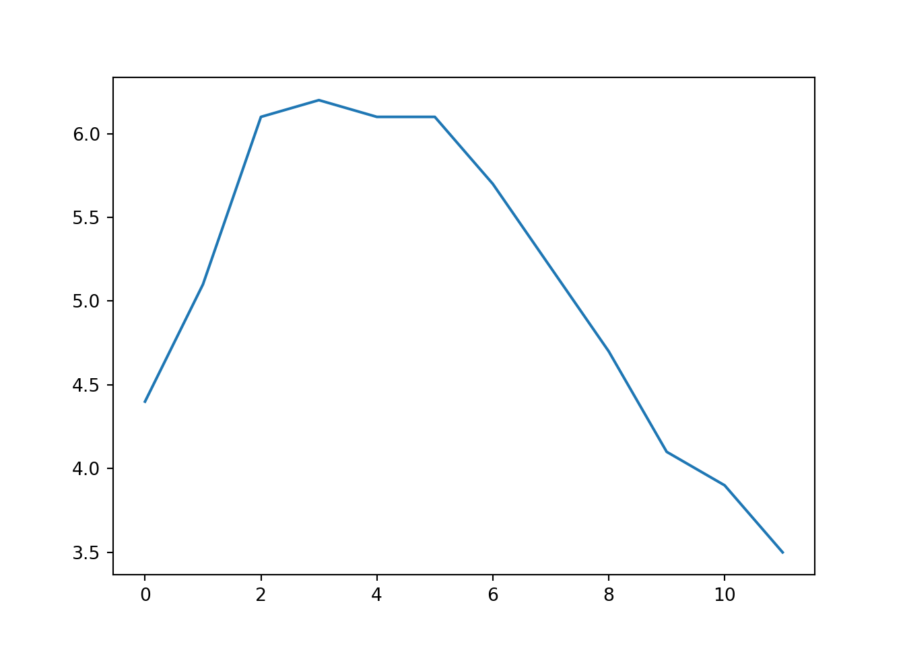
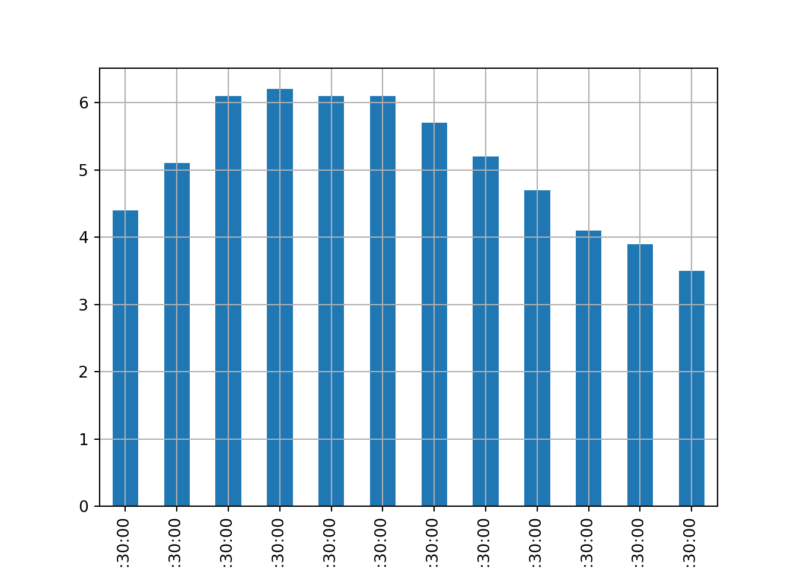
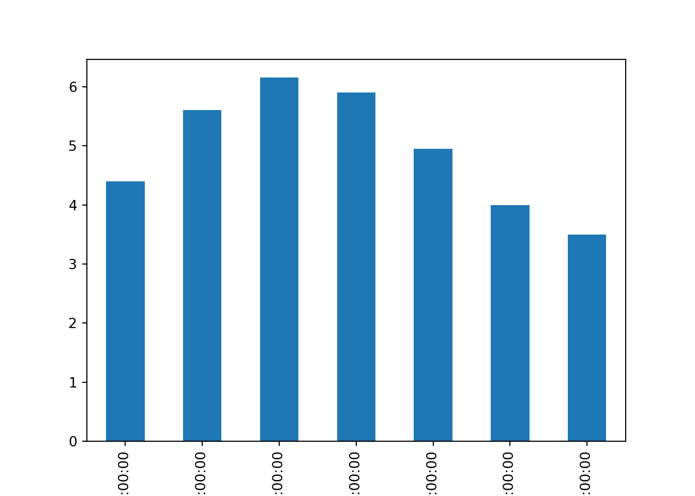
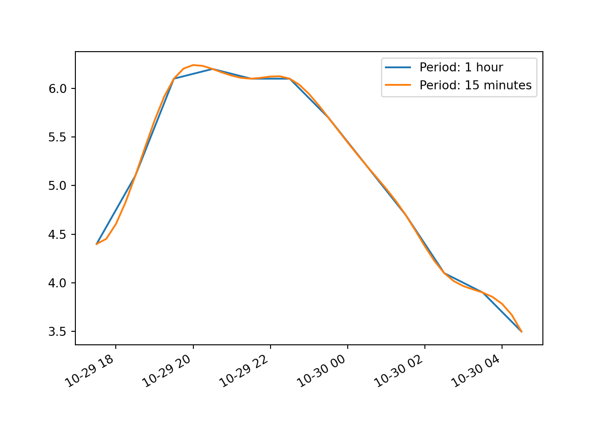
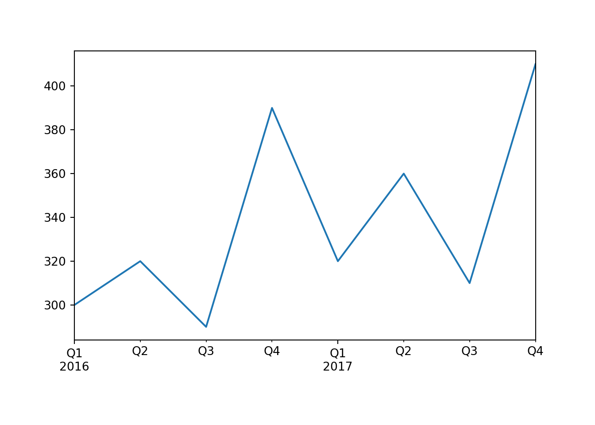
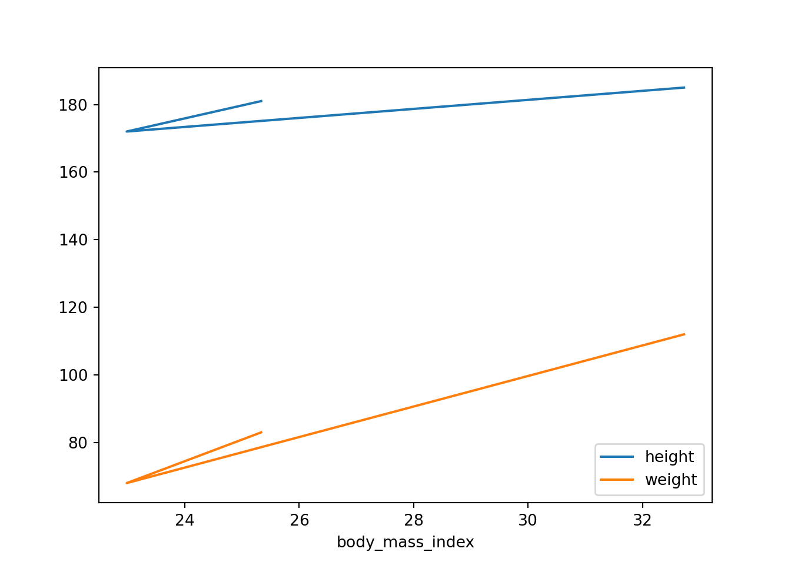
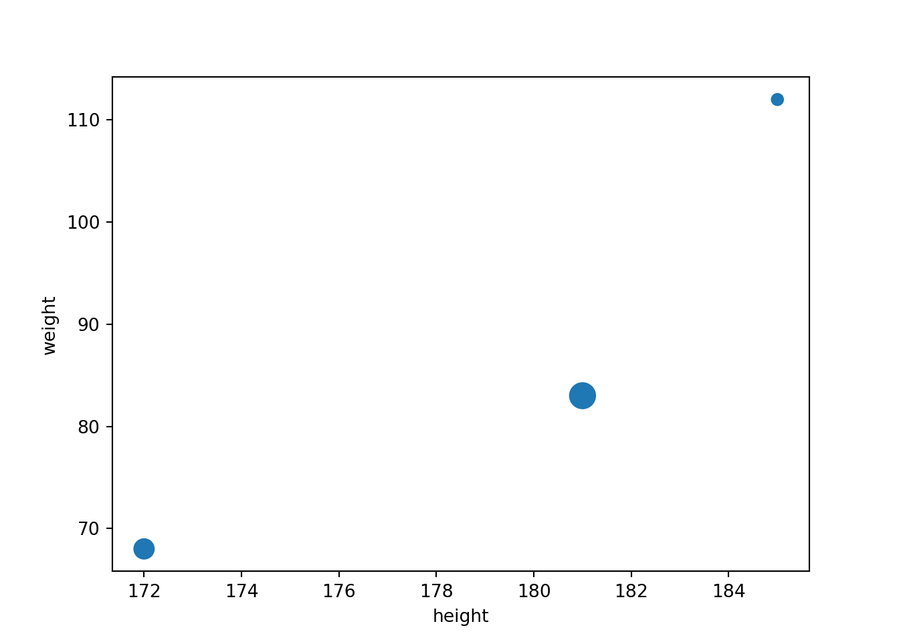
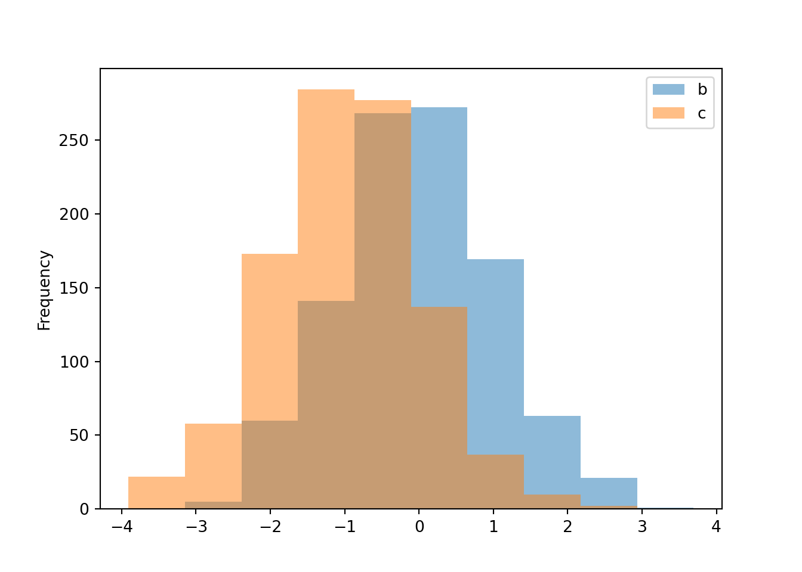
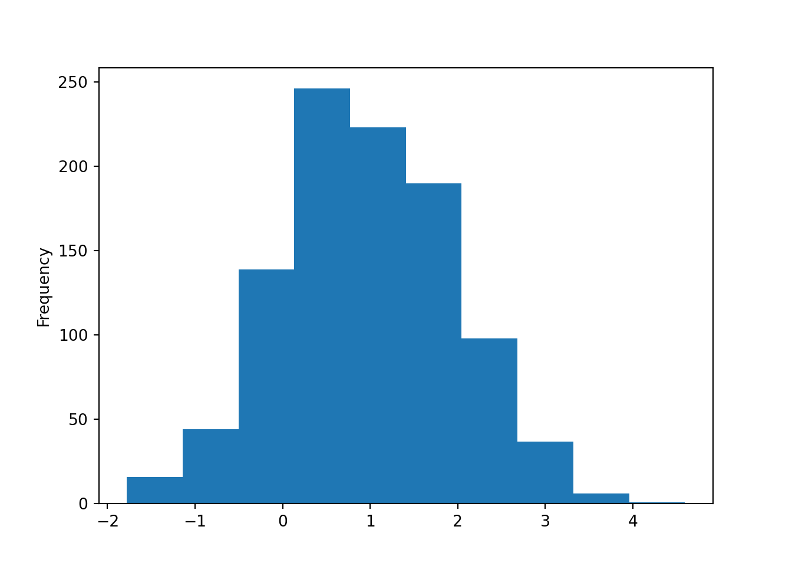

import pandas as pdweek_1b_pandas
Python
Lecture
Python Basics
“Pandas 기본”
“pandas 기본 코드 실습(한글)”
- toc:true
- branch: master
- badges: true
- comments: true
- author: Jiho Yeo
- categories: [jupyter, python]
도구 - 판다스(pandas)
pandas 라이브러리는 사용하기 쉬운 고성능 데이터 구조와 데이터 분석 도구를 제공합니다. 주 데이터 구조는 DataFrame입니다. 이를 인-메모리(in-memory) 2D 테이블로 생각할 수 있습니다(열 이름과 행 레이블이 있는 스프레드시트와 비슷합니다). 엑셀에 있는 많은 기능을 프로그램에서 사용할 수 있습니다. 여기에는 피봇 테이블이나 다른 열을 기반으로 열을 계산하고 그래프 출력하는 기능 등이 포함됩니다. 열 값으로 행을 그룹핑할 수도 있습니다. 또한 SQL과 비슷하게 테이블을 조인할 수 있습니다. 판다스는 시계열 데이터를 다루는데도 뛰어납니다.
필요 라이브러리:
- 넘파이(NumPy) – 넘파이에 익숙하지 않다면 지금 넘파이 튜토리얼을 둘러 보세요.
설정
먼저 pandas를 임포트합니다. 보통 pd로 임포트합니다:
pd.__version__'1.5.3'Series 객체
pandas 라이브러리는 다음과 같은 유용한 데이터 구조를 포함하고 있습니다:
Series객체를 곧 이어서 설명하겠습니다.Series객체는 1D 배열입니다. (열 이름과 행 레이블을 가진) 스프레드시트의 열과 비슷합니다.DataFrame객체는 2D 테이블입니다. (열 이름과 행 레이블을 가진) 스프레드시트와 비슷합니다.
Series 만들기
첫 번째 Series 객체를 만들어 보죠!
import numpy as np
np.array([2,-1,3,5])array([ 2, -1, 3, 5])s = pd.Series([2,-1,3,5])
s0 2
1 -1
2 3
3 5
dtype: int641D ndarray와 비슷합니다
Series 객체는 넘파이 ndarray와 비슷하게 동작합니다. 넘파이 함수에 매개변수로 종종 전달할 수 있습니다:
import numpy as np
np.exp(s)0 7.389056
1 0.367879
2 20.085537
3 148.413159
dtype: float64Series 객체에 대한 산술 연산도 가능합니다. ndarray와 비슷하게 원소별로 적용됩니다:
s + [1000,2000,3000,4000]0 1002
1 1999
2 3003
3 4005
dtype: int64넘파이와 비슷하게 Series에 하나의 숫자를 더하면 Series에 있는 모든 원소에 더해집니다. 이를 브로드캐스팅(broadcasting)이라고 합니다:
s0 2
1 -1
2 3
3 5
dtype: int64s + 10000 1002
1 999
2 1003
3 1005
dtype: int64*나 / 같은 모든 이항 연산과 심지어 조건 연산에서도 마찬가지입니다:
s < 00 False
1 True
2 False
3 False
dtype: bool인덱스 레이블
Series 객체에 있는 각 원소는 인덱스 레이블(index label)이라 불리는 고유한 식별자를 가지고 있습니다. 기본적으로 Series에 있는 원소의 순서입니다(0에서 시작합니다). 하지만 수동으로 인덱스 레이블을 지정할 수도 있습니다:
s2 = pd.Series([68, 83, 112, 68], index=["alice", "bob", "charles", "darwin"])
s2alice 68
bob 83
charles 112
darwin 68
dtype: int64그다음 dict처럼 Series를 사용할 수 있습니다:
s2["bob"]83일반 배열처럼 정수 인덱스를 사용하여 계속 원소에 접근할 수 있습니다:
s2[1]83레이블이나 정수를 사용해 접근할 때 명확하게 하기 위해 레이블은 loc 속성을 사용하고 정수는 iloc 속성을 사용하는 것이 좋습니다:
s2.loc["bob"]83s2.iloc[1]83Series는 인덱스 레이블을 슬라이싱할 수도 있습니다:
s2.iloc[1:3]bob 83
charles 112
dtype: int64기본 정수 레이블을 사용할 때 예상 외의 결과를 만들 수 있기 때문에 주의해야 합니다:
surprise = pd.Series([1000, 1001, 1002, 1003])
surprise0 1000
1 1001
2 1002
3 1003
dtype: int64surprise_slice = surprise[2:]
surprise_slice2 1002
3 1003
dtype: int64보세요. 첫 번째 원소의 인덱스 레이블이 2입니다. 따라서 슬라이싱 결과에서 인덱스 레이블 0인 원소는 없습니다:
try:
surprise_slice[0]
except KeyError as e:
print("키 에러:", e)키 에러: 0하지만 iloc 속성을 사용해 정수 인덱스로 원소에 접근할 수 있습니다. Series 객체를 사용할 때 loc와 iloc를 사용하는 것이 좋은 이유입니다:
surprise_slice.iloc[0]1002surprise_slice.loc[2]1002dict에서 초기화
dict에서 Series 객체를 만들 수 있습니다. 키는 인덱스 레이블로 사용됩니다:
weights = {"alice": 68, "bob": 83, "colin": 86, "darwin": 68}
s3 = pd.Series(weights)
s3alice 68
bob 83
colin 86
darwin 68
dtype: int64Series에 포함할 원소를 제어하고 index를 지정하여 명시적으로 순서를 결정할 수 있습니다:
s4 = pd.Series(weights, index = ["colin", "alice"])
s4colin 86
alice 68
dtype: int64자동 정렬
여러 개의 Series 객체를 다룰 때 pandas는 자동으로 인덱스 레이블에 따라 원소를 정렬합니다.
s2alice 68
bob 83
charles 112
darwin 68
dtype: int64s3alice 68
bob 83
colin 86
darwin 68
dtype: int64print(s2.keys())Index(['alice', 'bob', 'charles', 'darwin'], dtype='object')print(s3.keys())Index(['alice', 'bob', 'colin', 'darwin'], dtype='object')s2 + s3alice 136.0
bob 166.0
charles NaN
colin NaN
darwin 136.0
dtype: float64만들어진 Series는 s2와 s3의 인덱스 레이블의 합집합을 담고 있습니다. s2에 "colin"이 없고 s3에 "charles"가 없기 때문에 이 원소는 NaN 값을 가집니다(Not-a-Number는 누락이란 의미입니다).
자동 정렬은 구조가 다르고 누락된 값이 있는 여러 데이터를 다룰 때 매우 편리합니다. 하지만 올바른 인덱스 레이블을 지정하는 것을 잊는다면 원치않는 결과를 얻을 수 있습니다:
s5 = pd.Series([1000,1000,1000,1000])
print("s2 =", s2.values)s2 = [ 68 83 112 68]print("s5 =", s5.values)s5 = [1000 1000 1000 1000]s2 + s5alice NaN
bob NaN
charles NaN
darwin NaN
0 NaN
1 NaN
2 NaN
3 NaN
dtype: float64레이블이 하나도 맞지 않기 때문에 판다스가 이 Series를 정렬할 수 없습니다. 따라서 모두 NaN이 되었습니다.
스칼라로 초기화
스칼라와 인덱스 레이블의 리스트로 Series 객체를 초기화할 수도 있습니다: 모든 원소가 이 스칼라 값으로 설정됩니다.
meaning = pd.Series(42, ["life", "universe", "everything"])
meaninglife 42
universe 42
everything 42
dtype: int64Series 이름
Series는 name을 가질 수 있습니다:
s6 = pd.Series([83, 68], index=["bob", "alice"], name="weights")
s6bob 83
alice 68
Name: weights, dtype: int64s6.name'weights'Series 그래프 출력
맷플롯립을 사용해 Series 데이터를 쉽게 그래프로 출력할 수 있습니다(맷플롯립에 대한 자세한 설명은 맷플롯립 튜토리얼을 참고하세요). 맷플롯립을 임포트하고 plot() 메서드를 호출하면 끝입니다:
#%matplotlib inline
import matplotlib.pyplot as plt
temperatures = [4.4,5.1,6.1,6.2,6.1,6.1,5.7,5.2,4.7,4.1,3.9,3.5]
s7 = pd.Series(temperatures, name="Temperature")
s7.plot()
plt.show()
데이터를 그래프로 출력하는데 많은 옵션이 있습니다. 여기에서 모두 나열할 필요는 없습니다. 특정 종류의 그래프(히스토그램, 파이 차트 등)가 필요하면 판다스 문서의 시각화 섹션에서 예제 코드를 참고하세요.
시간 다루기
많은 데이터셋에 타임스탬프가 포함되어 있습니다. 판다스는 이런 데이터를 다루는데 뛰어납니다: * (2016Q3 같은) 기간과 (“monthly” 같은) 빈도를 표현할 수 있습니다. * 기간을 실제 타임스탬프로 변환하거나 그 반대로 변환할 수 있습니다. * 데이터를 리샘플링하고 원하는 방식으로 값을 모을 수 있습니다. * 시간대를 다룰 수 있습니다.
시간 범위
먼저 pd.date_range()를 사용해 시계열을 만들어 보죠. 이 함수는 2016년 10월 29일 5:30pm에서 시작하여 12시간마다 하나의 datetime을 담고 있는 DatetimeIndex를 반환합니다.
dates = pd.date_range('2016/10/29 5:30pm', periods=12, freq='H')
datesDatetimeIndex(['2016-10-29 17:30:00', '2016-10-29 18:30:00',
'2016-10-29 19:30:00', '2016-10-29 20:30:00',
'2016-10-29 21:30:00', '2016-10-29 22:30:00',
'2016-10-29 23:30:00', '2016-10-30 00:30:00',
'2016-10-30 01:30:00', '2016-10-30 02:30:00',
'2016-10-30 03:30:00', '2016-10-30 04:30:00'],
dtype='datetime64[ns]', freq='H')pd.date_range('2020-10-07', '2020-10-20', freq='3D')DatetimeIndex(['2020-10-07', '2020-10-10', '2020-10-13', '2020-10-16',
'2020-10-19'],
dtype='datetime64[ns]', freq='3D')이 DatetimeIndex를 Series의 인덱스로 사용할수 있습니다:
temperatures[4.4, 5.1, 6.1, 6.2, 6.1, 6.1, 5.7, 5.2, 4.7, 4.1, 3.9, 3.5]temp_series = pd.Series(data = temperatures, index = dates)
temp_series2016-10-29 17:30:00 4.4
2016-10-29 18:30:00 5.1
2016-10-29 19:30:00 6.1
2016-10-29 20:30:00 6.2
2016-10-29 21:30:00 6.1
2016-10-29 22:30:00 6.1
2016-10-29 23:30:00 5.7
2016-10-30 00:30:00 5.2
2016-10-30 01:30:00 4.7
2016-10-30 02:30:00 4.1
2016-10-30 03:30:00 3.9
2016-10-30 04:30:00 3.5
Freq: H, dtype: float64이 시리즈를 그래프로 출력해 보죠:
temp_series.plot(kind="bar")
plt.grid(True)
plt.show()
리샘플링
판다스는 매우 간단하게 시계열을 리샘플링할 수 있습니다. resample() 메서드를 호출하고 새로운 주기를 지정하면 됩니다:
temp_series2016-10-29 17:30:00 4.4
2016-10-29 18:30:00 5.1
2016-10-29 19:30:00 6.1
2016-10-29 20:30:00 6.2
2016-10-29 21:30:00 6.1
2016-10-29 22:30:00 6.1
2016-10-29 23:30:00 5.7
2016-10-30 00:30:00 5.2
2016-10-30 01:30:00 4.7
2016-10-30 02:30:00 4.1
2016-10-30 03:30:00 3.9
2016-10-30 04:30:00 3.5
Freq: H, dtype: float64temp_series_freq_2H = temp_series.resample("2H")
temp_series_freq_2H<pandas.core.resample.DatetimeIndexResampler object at 0x000001A9993FFE90>리샘플링 연산은 사실 지연된 연산입니다. (https://ko.wikipedia.org/wiki/%EB%8A%90%EA%B8%8B%ED%95%9C_%EA%B3%84%EC%82%B0%EB%B2%95) 그래서 Series 객체 대신 DatetimeIndexResampler 객체가 반환됩니다. 실제 리샘플링 연산을 수행하려면 mean() 같은 메서드를 호출할 수 있습니다. 이 메서드는 연속적인 시간 쌍에 대해 평균을 계산합니다:
temp_series_freq_2H = temp_series_freq_2H.mean()temp_series_freq_2H2016-10-29 16:00:00 4.40
2016-10-29 18:00:00 5.60
2016-10-29 20:00:00 6.15
2016-10-29 22:00:00 5.90
2016-10-30 00:00:00 4.95
2016-10-30 02:00:00 4.00
2016-10-30 04:00:00 3.50
Freq: 2H, dtype: float64결과를 그래프로 출력해 보죠:
temp_series_freq_2H.plot(kind="bar")
plt.show()
2시간 간격으로 어떻게 값이 수집되었는지 확인해 보세요. 예를 들어 6-8pm 간격을 보면 6:30pm에서 5.1이고 7:30pm에서 6.1입니다. 리샘플링 후에 5.1과 6.1의 평균인 5.6 하나를 얻었습니다. 평균말고 어떤 집계 함수(aggregation function)도 사용할 수 있습니다. 예를 들어 각 기간에서 최솟값을 찾을 수 있습니다:
temp_series_freq_2H = temp_series.resample("2H").mean()
temp_series_freq_2H2016-10-29 16:00:00 4.40
2016-10-29 18:00:00 5.60
2016-10-29 20:00:00 6.15
2016-10-29 22:00:00 5.90
2016-10-30 00:00:00 4.95
2016-10-30 02:00:00 4.00
2016-10-30 04:00:00 3.50
Freq: 2H, dtype: float64또는 동일한 효과를 내는 apply() 메서드를 사용할 수 있습니다:
import numpy as nptemp_series_freq_2H = temp_series.resample("2H").apply(np.min)
temp_series_freq_2H2016-10-29 16:00:00 4.4
2016-10-29 18:00:00 5.1
2016-10-29 20:00:00 6.1
2016-10-29 22:00:00 5.7
2016-10-30 00:00:00 4.7
2016-10-30 02:00:00 3.9
2016-10-30 04:00:00 3.5
Freq: 2H, dtype: float64업샘플링과 보간
다운샘플링의 예를 보았습니다. 하지만 업샘플링(즉, 빈도를 높입니다)도 할 수 있습니다. 하지만 데이터에 구멍을 만듭니다:
temp_series_freq_15min = temp_series.resample("15Min").mean()
temp_series_freq_15min.head(n=10) # `head`는 상위 n 개의 값만 출력합니다2016-10-29 17:30:00 4.4
2016-10-29 17:45:00 NaN
2016-10-29 18:00:00 NaN
2016-10-29 18:15:00 NaN
2016-10-29 18:30:00 5.1
2016-10-29 18:45:00 NaN
2016-10-29 19:00:00 NaN
2016-10-29 19:15:00 NaN
2016-10-29 19:30:00 6.1
2016-10-29 19:45:00 NaN
Freq: 15T, dtype: float64한가지 방법은 보간으로 사이를 채우는 것입니다. 이렇게 하려면 interpolate() 메서드를 호출합니다. 기본값은 선형 보간이지만 3차 보간(cubic interpolation) 같은 다른 방법을 선택할 수 있습니다: https://bskyvision.com/789
temp_series_freq_15min = temp_series.resample("15Min").interpolate(method="cubic")
temp_series_freq_15min.head(n=10)2016-10-29 17:30:00 4.400000
2016-10-29 17:45:00 4.452911
2016-10-29 18:00:00 4.605113
2016-10-29 18:15:00 4.829758
2016-10-29 18:30:00 5.100000
2016-10-29 18:45:00 5.388992
2016-10-29 19:00:00 5.669887
2016-10-29 19:15:00 5.915839
2016-10-29 19:30:00 6.100000
2016-10-29 19:45:00 6.203621
Freq: 15T, dtype: float64temp_series.plot(label="Period: 1 hour")
temp_series_freq_15min.plot(label="Period: 15 minutes")
plt.legend()
plt.show()
시간대
기본적으로 datetime은 단순합니다. 시간대(timezone)을 고려하지 않죠. 따라서 2016-10-30 02:30는 파리나 뉴욕이나 2016년 10월 30일 2:30pm입니다. tz_localize() 메서드로 시간대를 고려한 datetime을 만들 수 있습니다: https://www.timeanddate.com/time/map/
temp_series2016-10-29 17:30:00 4.4
2016-10-29 18:30:00 5.1
2016-10-29 19:30:00 6.1
2016-10-29 20:30:00 6.2
2016-10-29 21:30:00 6.1
2016-10-29 22:30:00 6.1
2016-10-29 23:30:00 5.7
2016-10-30 00:30:00 5.2
2016-10-30 01:30:00 4.7
2016-10-30 02:30:00 4.1
2016-10-30 03:30:00 3.9
2016-10-30 04:30:00 3.5
Freq: H, dtype: float64temp_series_ny = temp_series.tz_localize("America/New_York")
temp_series_ny2016-10-29 17:30:00-04:00 4.4
2016-10-29 18:30:00-04:00 5.1
2016-10-29 19:30:00-04:00 6.1
2016-10-29 20:30:00-04:00 6.2
2016-10-29 21:30:00-04:00 6.1
2016-10-29 22:30:00-04:00 6.1
2016-10-29 23:30:00-04:00 5.7
2016-10-30 00:30:00-04:00 5.2
2016-10-30 01:30:00-04:00 4.7
2016-10-30 02:30:00-04:00 4.1
2016-10-30 03:30:00-04:00 3.9
2016-10-30 04:30:00-04:00 3.5
dtype: float64모든 datetime에 -04:00이 추가됩니다. 즉 모든 시간은 UTC - 4시간을 의미합니다.
다음처럼 파리 시간대로 바꿀 수 있습니다:
temp_series_paris = temp_series_ny.tz_convert("Europe/Paris")
temp_series_paris2016-10-29 23:30:00+02:00 4.4
2016-10-30 00:30:00+02:00 5.1
2016-10-30 01:30:00+02:00 6.1
2016-10-30 02:30:00+02:00 6.2
2016-10-30 02:30:00+01:00 6.1
2016-10-30 03:30:00+01:00 6.1
2016-10-30 04:30:00+01:00 5.7
2016-10-30 05:30:00+01:00 5.2
2016-10-30 06:30:00+01:00 4.7
2016-10-30 07:30:00+01:00 4.1
2016-10-30 08:30:00+01:00 3.9
2016-10-30 09:30:00+01:00 3.5
dtype: float64UTC와의 차이가 +02:00에서 +01:00으로 바뀐 것을 알 수 있습니다. 이는 프랑스가 10월 30일 3am에 겨울 시간으로 바꾸기 때문입니다(2am으로 바뀝니다). 따라서 2:30am이 두 번 등장합니다! 시간대가 없는 표현으로 돌아가 보죠(시간대가 없이 지역 시간으로 매시간 로그를 기록하는 경우 이와 비슷할 것입니다):
temp_series_paris_naive = temp_series_paris.tz_localize(None)
temp_series_paris_naive2016-10-29 23:30:00 4.4
2016-10-30 00:30:00 5.1
2016-10-30 01:30:00 6.1
2016-10-30 02:30:00 6.2
2016-10-30 02:30:00 6.1
2016-10-30 03:30:00 6.1
2016-10-30 04:30:00 5.7
2016-10-30 05:30:00 5.2
2016-10-30 06:30:00 4.7
2016-10-30 07:30:00 4.1
2016-10-30 08:30:00 3.9
2016-10-30 09:30:00 3.5
dtype: float64이렇게 되면 02:30이 정말 애매합니다. 시간대가 없는 datetime을 파리 시간대로 바꿀 때 에러가 발생합니다:
try:
temp_series_paris_naive.tz_localize("Europe/Paris")
except Exception as e:
print(type(e))
print(e)<class 'pytz.exceptions.AmbiguousTimeError'>
Cannot infer dst time from 2016-10-30 02:30:00, try using the 'ambiguous' argument다행히 ambiguous 매개변수를 사용하면 판다스가 타임스탬프의 순서를 기반으로 적절한 DST(일광 절약 시간제)를 추측합니다:
https://m.blog.naver.com/PostView.naver?isHttpsRedirect=true&blogId=tori-tours&logNo=221221361831
temp_series_paris_naive.tz_localize("Europe/Paris", ambiguous="infer")2016-10-29 23:30:00+02:00 4.4
2016-10-30 00:30:00+02:00 5.1
2016-10-30 01:30:00+02:00 6.1
2016-10-30 02:30:00+02:00 6.2
2016-10-30 02:30:00+01:00 6.1
2016-10-30 03:30:00+01:00 6.1
2016-10-30 04:30:00+01:00 5.7
2016-10-30 05:30:00+01:00 5.2
2016-10-30 06:30:00+01:00 4.7
2016-10-30 07:30:00+01:00 4.1
2016-10-30 08:30:00+01:00 3.9
2016-10-30 09:30:00+01:00 3.5
dtype: float64기간
pd.period_range() 함수는 DatetimeIndex가 아니라 PeriodIndex를 반환합니다. 예를 들어 2016과 2017년의 전체 분기를 가져와 보죠:
quarters = pd.period_range('2016Q1', periods=8, freq='Q')
quartersPeriodIndex(['2016Q1', '2016Q2', '2016Q3', '2016Q4', '2017Q1', '2017Q2',
'2017Q3', '2017Q4'],
dtype='period[Q-DEC]')PeriodIndex에 숫자 N을 추가하면 PeriodIndex 빈도의 N 배만큼 이동시킵니다:
quarters + 3PeriodIndex(['2016Q4', '2017Q1', '2017Q2', '2017Q3', '2017Q4', '2018Q1',
'2018Q2', '2018Q3'],
dtype='period[Q-DEC]')asfreq() 메서드를 사용하면 PeriodIndex의 빈도를 바꿀 수 있습니다. 모든 기간이 늘어나거나 줄어듭니다. 예를 들어 분기 기간을 모두 월별 기간으로 바꾸어 보죠:
quarters.asfreq("M")PeriodIndex(['2016-03', '2016-06', '2016-09', '2016-12', '2017-03', '2017-06',
'2017-09', '2017-12'],
dtype='period[M]')quartersPeriodIndex(['2016Q1', '2016Q2', '2016Q3', '2016Q4', '2017Q1', '2017Q2',
'2017Q3', '2017Q4'],
dtype='period[Q-DEC]')기본적으로 asfreq는 각 기간의 끝에 맞춥니다. 기간의 시작에 맞추도록 변경할 수 있습니다:
quarters.asfreq("M", how="start")PeriodIndex(['2016-01', '2016-04', '2016-07', '2016-10', '2017-01', '2017-04',
'2017-07', '2017-10'],
dtype='period[M]')간격을 늘릴 수도 있습니다: pandas 공식 메뉴얼 참조: https://pandas.pydata.org/pandas-docs/stable/user_guide/timeseries.html
quarters.asfreq("A")PeriodIndex(['2016', '2016', '2016', '2016', '2017', '2017', '2017', '2017'], dtype='period[A-DEC]')물론 PeriodIndex로 Series를 만들 수 있습니다:
quarterly_revenue = pd.Series([300, 320, 290, 390, 320, 360, 310, 410], index = quarters)
quarterly_revenue2016Q1 300
2016Q2 320
2016Q3 290
2016Q4 390
2017Q1 320
2017Q2 360
2017Q3 310
2017Q4 410
Freq: Q-DEC, dtype: int64quarterly_revenue.plot(kind="line")
plt.show()
to_timestamp를 호출해서 기간을 타임스탬프로 변경할 수 있습니다. 기본적으로 기간의 첫 번째 날을 반환합니다. 하지만 how와 freq를 지정해서 기간의 마지막 시간을 얻을 수 있습니다:
quarterly_revenue2016Q1 300
2016Q2 320
2016Q3 290
2016Q4 390
2017Q1 320
2017Q2 360
2017Q3 310
2017Q4 410
Freq: Q-DEC, dtype: int64last_hours = quarterly_revenue.to_timestamp(how="end", freq="H")
last_hours2016-03-31 23:59:59.999999999 300
2016-06-30 23:59:59.999999999 320
2016-09-30 23:59:59.999999999 290
2016-12-31 23:59:59.999999999 390
2017-03-31 23:59:59.999999999 320
2017-06-30 23:59:59.999999999 360
2017-09-30 23:59:59.999999999 310
2017-12-31 23:59:59.999999999 410
dtype: int64to_peroid를 호출하면 다시 기간으로 돌아갑니다:
last_hours.to_period()2016Q1 300
2016Q2 320
2016Q3 290
2016Q4 390
2017Q1 320
2017Q2 360
2017Q3 310
2017Q4 410
Freq: Q-DEC, dtype: int64판다스는 여러 가지 시간 관련 함수를 많이 제공합니다. 온라인 문서를 확인해 보세요. 예를 하나 들면 2016년 매월 마지막 업무일의 9시를 얻는 방법은 다음과 같습니다:
months_2022 = pd.period_range("2022", periods=12, freq="M")
one_day_after_last_days = months_2022.asfreq("D") + 1
last_bdays = one_day_after_last_days.to_timestamp() - pd.tseries.offsets.BDay(n=1)
last_bdays.to_period("H") + 9PeriodIndex(['2022-01-31 09:00', '2022-02-28 09:00', '2022-03-31 09:00',
'2022-04-29 09:00', '2022-05-31 09:00', '2022-06-30 09:00',
'2022-07-29 09:00', '2022-08-31 09:00', '2022-09-30 09:00',
'2022-10-31 09:00', '2022-11-30 09:00', '2022-12-30 09:00'],
dtype='period[H]')DataFrame 객체
데이터프레임 객체는 스프레드시트를 표현합니다. 셀 값, 열 이름, 행 인덱스 레이블을 가집니다. 다른 열을 바탕으로 열을 계산하는 식을 쓸 수 있고 피봇 테이블을 만들고, 행을 그룹핑하고, 그래프를 그릴 수 있습니다. DataFrame을 Series의 딕셔너리로 볼 수 있습니다.
DataFrame 만들기
Series 객체의 딕셔너리를 전달하여 데이터프레임을 만들 수 있습니다:
people_dict = {
"weight": pd.Series([68, 83, 112], index=["alice", "bob", "charles"]),
"birthyear": pd.Series([1984, 1985, 1992], index=["bob", "alice", "charles"], name="year"),
"children": pd.Series([0, 3], index=["charles", "bob"]),
"hobby": pd.Series(["Biking", "Dancing"], index=["alice", "bob"]),
}
people = pd.DataFrame(people_dict)
people weight birthyear children hobby
alice 68 1985 NaN Biking
bob 83 1984 3.0 Dancing
charles 112 1992 0.0 NaN몇가지 알아 두어야 할 것은 다음과 같습니다:
Series는 인덱스를 기반으로 자동으로 정렬됩니다.- 누란된 값은
NaN으로 표현됩니다. Series이름은 무시됩니다("year"란 이름은 삭제됩니다).DataFrame은 주피터 노트북에서 멋지게 출력됩니다!
예상하는 방식으로 열을 참조할 수 있고 Series 객체가 반환됩니다:
people["birthyear"]alice 1985
bob 1984
charles 1992
Name: birthyear, dtype: int64동시에 여러 개의 열을 선택할 수 있습니다:
people[["birthyear", "hobby"]] birthyear hobby
alice 1985 Biking
bob 1984 Dancing
charles 1992 NaNpeople.loc[:,["birthyear", "hobby"]] birthyear hobby
alice 1985 Biking
bob 1984 Dancing
charles 1992 NaN열 리스트나 행 인덱스 레이블을 DataFrame 생성자에 전달하면 해당 열과 행으로 채워진 데이터프레임이 반환됩니다. 예를 들면:
people_dict{'weight': alice 68
bob 83
charles 112
dtype: int64, 'birthyear': bob 1984
alice 1985
charles 1992
Name: year, dtype: int64, 'children': charles 0
bob 3
dtype: int64, 'hobby': alice Biking
bob Dancing
dtype: object}d2 = pd.DataFrame(
people_dict,
columns=["birthyear", "weight", "height"],
index=["bob", "alice", "eugene"]
)d2 birthyear weight height
bob 1984.0 83.0 NaN
alice 1985.0 68.0 NaN
eugene NaN NaN NaNDataFrame을 만드는 또 다른 편리한 방법은 ndarray나 리스트의 리스트로 모든 값을 생성자에게 전달하고 열 이름과 행 인덱스 레이블을 각기 지정하는 것입니다:
values = [
[1985, np.nan, "Biking", 68],
[1984, 3, "Dancing", 83],
[1992, 0, np.nan, 112]
]
d3 = pd.DataFrame(
values,
columns=["birthyear", "children", "hobby", "weight"],
index=["alice", "bob", "charles"]
)
d3 birthyear children hobby weight
alice 1985 NaN Biking 68
bob 1984 3.0 Dancing 83
charles 1992 0.0 NaN 112누락된 값을 지정하려면 np.nan이나 넘파이 마스크 배열을 사용합니다:
dtype = object는 문자열 데이터를 의미
masked_array = np.ma.asarray(values, dtype=object)
masked_arraymasked_array(
data=[[1985, nan, 'Biking', 68],
[1984, 3, 'Dancing', 83],
[1992, 0, nan, 112]],
mask=False,
fill_value='?',
dtype=object)masked_array = np.ma.asarray(values, dtype=object)
masked_array[(0, 2), (1, 2)] = np.ma.masked
d3 = pd.DataFrame(
masked_array,
columns=["birthyear", "children", "hobby", "weight"],
index=["alice", "bob", "charles"]
)
d3 birthyear children hobby weight
alice 1985 NaN Biking 68
bob 1984 3 Dancing 83
charles 1992 0 NaN 112ndarray 대신에 DataFrame 객체를 전달할 수도 있습니다:
d3 birthyear children hobby weight
alice 1985 NaN Biking 68
bob 1984 3 Dancing 83
charles 1992 0 NaN 112d4 = pd.DataFrame(
d3,
columns=["hobby", "children"],
index=["alice", "bob"]
)
d4 hobby children
alice Biking NaN
bob Dancing 3딕셔너리의 딕셔너리(또는 리스트의 리스트)로 DataFrame을 만들 수 있습니다:
people = pd.DataFrame({
"birthyear": {"alice":1985, "bob": 1984, "charles": 1992},
"hobby": {"alice":"Biking", "bob": "Dancing"},
"weight": {"alice":68, "bob": 83, "charles": 112},
"children": {"bob": 3, "charles": 0}
})
people birthyear hobby weight children
alice 1985 Biking 68 NaN
bob 1984 Dancing 83 3.0
charles 1992 NaN 112 0.0멀티 인덱싱
모든 열이 같은 크기의 튜플이면 멀티 인덱스로 인식합니다. 열 인덱스 레이블에도 같은 방식이 적용됩니다. 예를 들면:
d5 = pd.DataFrame(
{
("public", "birthyear"):
{("Paris","alice"):1985, ("Paris","bob"): 1984, ("London","charles"): 1992},
("public", "hobby"):
{("Paris","alice"):"Biking", ("Paris","bob"): "Dancing"},
("private", "weight"):
{("Paris","alice"):68, ("Paris","bob"): 83, ("London","charles"): 112},
("private", "children"):
{("Paris", "alice"):np.nan, ("Paris","bob"): 3, ("London","charles"): 0}
}
)
d5 public private
birthyear hobby weight children
Paris alice 1985 Biking 68 NaN
bob 1984 Dancing 83 3.0
London charles 1992 NaN 112 0.0이제 "public" 열을 모두 담은 DataFrame을 손쉽게 만들 수 있습니다:
d5["public"] birthyear hobby
Paris alice 1985 Biking
bob 1984 Dancing
London charles 1992 NaNd5["public", "hobby"] # d5["public"]["hobby"]와 같습니다.Paris alice Biking
bob Dancing
London charles NaN
Name: (public, hobby), dtype: objectd5["public"]['hobby']Paris alice Biking
bob Dancing
London charles NaN
Name: hobby, dtype: object레벨 낮추기
d5를 다시 확인해 보죠:
d5 public private
birthyear hobby weight children
Paris alice 1985 Biking 68 NaN
bob 1984 Dancing 83 3.0
London charles 1992 NaN 112 0.0열의 레벨(level)이 2개이고 인덱스 레벨이 2개입니다. droplevel()을 사용해 열 레벨을 낮출 수 있습니다(인덱스도 마찬가지입니다):
d5.columns = d5.columns.droplevel(level = 0)
d5 birthyear hobby weight children
Paris alice 1985 Biking 68 NaN
bob 1984 Dancing 83 3.0
London charles 1992 NaN 112 0.0d6 = d5.copy()
d6.index = d6.index.droplevel(level = 0)
d6 birthyear hobby weight children
alice 1985 Biking 68 NaN
bob 1984 Dancing 83 3.0
charles 1992 NaN 112 0.0전치
T 속성을 사용해 열과 인덱스를 바꿀 수 있습니다:
d5 birthyear hobby weight children
Paris alice 1985 Biking 68 NaN
bob 1984 Dancing 83 3.0
London charles 1992 NaN 112 0.0d6 = d5.T
d6 Paris London
alice bob charles
birthyear 1985 1984 1992
hobby Biking Dancing NaN
weight 68 83 112
children NaN 3.0 0.0레벨 스택과 언스택
stack() 메서드는 가장 낮은 열 레벨을 가장 낮은 인덱스 뒤에 추가합니다:
d6 Paris London
alice bob charles
birthyear 1985 1984 1992
hobby Biking Dancing NaN
weight 68 83 112
children NaN 3.0 0.0d7 = d6.stack()
d7 London Paris
birthyear alice NaN 1985
bob NaN 1984
charles 1992 NaN
hobby alice NaN Biking
bob NaN Dancing
weight alice NaN 68
bob NaN 83
charles 112 NaN
children bob NaN 3.0
charles 0.0 NaNNaN 값이 생겼습니다. 이전에 없던 조합이 생겼기 때문입니다(예를 들어 London에 bob이 없었습니다).
unstack()을 호출하면 반대가 됩니다. 여기에서도 많은 NaN 값이 생성됩니다.
d8 = d7.unstack()
d8 London Paris
alice bob charles alice bob charles
birthyear NaN NaN 1992 1985 1984 NaN
children NaN NaN 0.0 NaN 3.0 NaN
hobby NaN NaN NaN Biking Dancing NaN
weight NaN NaN 112 68 83 NaNunstack을 다시 호출하면 Series 객체가 만들어 집니다:
d9 = d8.unstack()
d9London alice birthyear NaN
children NaN
hobby NaN
weight NaN
bob birthyear NaN
children NaN
hobby NaN
weight NaN
charles birthyear 1992
children 0.0
hobby NaN
weight 112
Paris alice birthyear 1985
children NaN
hobby Biking
weight 68
bob birthyear 1984
children 3.0
hobby Dancing
weight 83
charles birthyear NaN
children NaN
hobby NaN
weight NaN
dtype: objectstack()과 unstack() 메서드를 사용할 때 스택/언스택할 level을 선택할 수 있습니다. 심지어 한 번에 여러 개의 레벨을 스택/언스택할 수도 있습니다:
d10 = d9.unstack(level = (0,1))
d10 London Paris
alice bob charles alice bob charles
birthyear NaN NaN 1992 1985 1984 NaN
children NaN NaN 0.0 NaN 3.0 NaN
hobby NaN NaN NaN Biking Dancing NaN
weight NaN NaN 112 68 83 NaN대부분의 메서드는 수정된 복사본을 반환합니다
눈치챘겠지만 stack()과 unstack() 메서드는 객체를 수정하지 않습니다. 대신 복사본을 만들어 반환합니다. 판다스에 있는 대부분의 메서드들이 이렇게 동작합니다.
Stack & Unstack + Pivot에 대한 설명 참고 https://pandas.pydata.org/docs/user_guide/reshaping.html
Data Reshaping!
Pivot
import pandas._testing as tm
def unpivot(frame):
N, K = frame.shape
data = {
"value": frame.to_numpy().ravel("F"),
"variable": np.asarray(frame.columns).repeat(N),
"date": np.tile(np.asarray(frame.index), K),
}
return pd.DataFrame(data, columns=["date", "variable", "value"])
df = unpivot(tm.makeTimeDataFrame(3))df date variable value
0 2000-01-03 A 1.203469
1 2000-01-04 A -1.034774
2 2000-01-05 A 2.040291
3 2000-01-03 B -1.866532
4 2000-01-04 B 0.017375
5 2000-01-05 B 1.224528
6 2000-01-03 C -0.285276
7 2000-01-04 C 0.529954
8 2000-01-05 C 0.275365
9 2000-01-03 D -0.748469
10 2000-01-04 D -1.688915
11 2000-01-05 D -0.085248To select out everything for variable A we could do:
filtered = df[df["variable"] == "A"]
filtered date variable value
0 2000-01-03 A 1.203469
1 2000-01-04 A -1.034774
2 2000-01-05 A 2.040291But suppose we wish to do time series operations with the variables. A better representation would be where the columns are the unique variables and an index of dates identifies individual observations. To reshape the data into this form, we use the DataFrame.pivot() method (also implemented as a top level function pivot()):
pivoted = df.pivot(index="date", columns="variable", values="value")
pivotedvariable A B C D
date
2000-01-03 1.203469 -1.866532 -0.285276 -0.748469
2000-01-04 -1.034774 0.017375 0.529954 -1.688915
2000-01-05 2.040291 1.224528 0.275365 -0.085248pivoted.columnsIndex(['A', 'B', 'C', 'D'], dtype='object', name='variable')pivoted.indexDatetimeIndex(['2000-01-03', '2000-01-04', '2000-01-05'], dtype='datetime64[ns]', name='date', freq=None)If the values argument is omitted, and the input DataFrame has more than one column of values which are not used as column or index inputs to pivot(), then the resulting “pivoted” DataFrame will have hierarchical columns whose topmost level indicates the respective value column:
df["value2"] = df["value"] * 2df date variable value value2
0 2000-01-03 A 1.203469 2.406938
1 2000-01-04 A -1.034774 -2.069547
2 2000-01-05 A 2.040291 4.080583
3 2000-01-03 B -1.866532 -3.733065
4 2000-01-04 B 0.017375 0.034750
5 2000-01-05 B 1.224528 2.449057
6 2000-01-03 C -0.285276 -0.570552
7 2000-01-04 C 0.529954 1.059907
8 2000-01-05 C 0.275365 0.550729
9 2000-01-03 D -0.748469 -1.496939
10 2000-01-04 D -1.688915 -3.377830
11 2000-01-05 D -0.085248 -0.170497pivoted = df.pivot(index="date", columns="variable")
pivoted value ... value2
variable A B C ... B C D
date ...
2000-01-03 1.203469 -1.866532 -0.285276 ... -3.733065 -0.570552 -1.496939
2000-01-04 -1.034774 0.017375 0.529954 ... 0.034750 1.059907 -3.377830
2000-01-05 2.040291 1.224528 0.275365 ... 2.449057 0.550729 -0.170497
[3 rows x 8 columns]pivoted.columnsMultiIndex([( 'value', 'A'),
( 'value', 'B'),
( 'value', 'C'),
( 'value', 'D'),
('value2', 'A'),
('value2', 'B'),
('value2', 'C'),
('value2', 'D')],
names=[None, 'variable'])pivoted['value']variable A B C D
date
2000-01-03 1.203469 -1.866532 -0.285276 -0.748469
2000-01-04 -1.034774 0.017375 0.529954 -1.688915
2000-01-05 2.040291 1.224528 0.275365 -0.085248행 참조하기
people DataFrame으로 돌아가 보죠:
people birthyear hobby weight children
alice 1985 Biking 68 NaN
bob 1984 Dancing 83 3.0
charles 1992 NaN 112 0.0loc 속성으로 열 대신 행을 참조할 수 있습니다. DataFrame의 열 이름이 행 인덱스 레이블로 매핑된 Series 객체가 반환됩니다:
people['birthyear']alice 1985
bob 1984
charles 1992
Name: birthyear, dtype: int64people.loc["charles"]birthyear 1992
hobby NaN
weight 112
children 0.0
Name: charles, dtype: objectiloc 속성을 사용해 정수 인덱스로 행을 참조할 수 있습니다:
people.iloc[2]birthyear 1992
hobby NaN
weight 112
children 0.0
Name: charles, dtype: object행을 슬라이싱할 수 있으며 DataFrame 객체가 반환됩니다:
people birthyear hobby weight children
alice 1985 Biking 68 NaN
bob 1984 Dancing 83 3.0
charles 1992 NaN 112 0.0people.iloc[1:3] birthyear hobby weight children
bob 1984 Dancing 83 3.0
charles 1992 NaN 112 0.0마자믹으로 불리언 배열을 전달하여 해당하는 행을 가져올 수 있습니다:
people[np.array([True, False, True])] birthyear hobby weight children
alice 1985 Biking 68 NaN
charles 1992 NaN 112 0.0불리언 표현식을 사용할 때 아주 유용합니다:
people["birthyear"] < 1990alice True
bob True
charles False
Name: birthyear, dtype: boolpeople[people["birthyear"] < 1990] birthyear hobby weight children
alice 1985 Biking 68 NaN
bob 1984 Dancing 83 3.0열 추가, 삭제
DataFrame을 Series의 딕셔너리처럼 다룰 수 있습니다. 따라서 다음 같이 쓸 수 있습니다:
people birthyear hobby weight children
alice 1985 Biking 68 NaN
bob 1984 Dancing 83 3.0
charles 1992 NaN 112 0.0people["age"] = 2022 - people["birthyear"] # "age" 열을 추가합니다
people["over 30"] = people["age"] > 30 # "over 30" 열을 추가합니다
people birthyear hobby weight children age over 30
alice 1985 Biking 68 NaN 37 True
bob 1984 Dancing 83 3.0 38 True
charles 1992 NaN 112 0.0 30 Falsebirthyears = people.pop("birthyear")
del people["children"]birthyearsalice 1985
bob 1984
charles 1992
Name: birthyear, dtype: int64people hobby weight age over 30
alice Biking 68 37 True
bob Dancing 83 38 True
charles NaN 112 30 False# 딕셔너리도 유사함
weights = {"alice": 68, "bob": 83, "colin": 86, "darwin": 68}weights.pop("alice")68weights{'bob': 83, 'colin': 86, 'darwin': 68}del weights["bob"]weights{'colin': 86, 'darwin': 68}새로운 열을 추가할 때 행의 개수는 같아야 합니다. 누락된 행은 NaN으로 채워지고 추가적인 행은 무시됩니다:
people.indexIndex(['alice', 'bob', 'charles'], dtype='object')people["pets"] = pd.Series({"bob": 0, "charles": 5, "eugene":1}) # alice 누락됨, eugene은 무시됨
people hobby weight age over 30 pets
alice Biking 68 37 True NaN
bob Dancing 83 38 True 0.0
charles NaN 112 30 False 5.0새로운 열을 추가할 때 기본적으로 (오른쪽) 끝에 추가됩니다. insert() 메서드를 사용해 다른 곳에 열을 추가할 수 있습니다:
people.insert(1, "height", [172, 181, 185])
people hobby height weight age over 30 pets
alice Biking 172 68 37 True NaN
bob Dancing 181 83 38 True 0.0
charles NaN 185 112 30 False 5.0새로운 열 할당하기
assign() 메서드를 호출하여 새로운 열을 만들 수도 있습니다. 이는 새로운 DataFrame 객체를 반환하며 원본 객체는 변경되지 않습니다:
people.assign(
body_mass_index = people["weight"] / (people["height"] / 100) ** 2,
has_pets = people["pets"] > 0
) hobby height weight age over 30 pets body_mass_index has_pets
alice Biking 172 68 37 True NaN 22.985398 False
bob Dancing 181 83 38 True 0.0 25.335002 False
charles NaN 185 112 30 False 5.0 32.724617 Truepeople["body_mass_index"] = people["weight"] / (people["height"] / 100) ** 2
people hobby height weight age over 30 pets body_mass_index
alice Biking 172 68 37 True NaN 22.985398
bob Dancing 181 83 38 True 0.0 25.335002
charles NaN 185 112 30 False 5.0 32.724617del people["body_mass_index"]people hobby height weight age over 30 pets
alice Biking 172 68 37 True NaN
bob Dancing 181 83 38 True 0.0
charles NaN 185 112 30 False 5.0할당문 안에서 만든 열은 접근할 수 없습니다:
try:
people.assign(
body_mass_index = people["weight"] / (people["height"] / 100) ** 2,
overweight = people["body_mass_index"] > 25
)
except KeyError as e:
print("키 에러:", e)키 에러: 'body_mass_index'해결책은 두 개의 연속된 할당문으로 나누는 것입니다:
d6 = people.assign(body_mass_index = people["weight"] / (people["height"] / 100) ** 2)
d6.assign(overweight = d6["body_mass_index"] > 25) hobby height weight ... pets body_mass_index overweight
alice Biking 172 68 ... NaN 22.985398 False
bob Dancing 181 83 ... 0.0 25.335002 True
charles NaN 185 112 ... 5.0 32.724617 True
[3 rows x 8 columns]임시 변수 d6를 만들면 불편합니다. assign() 메서드를 연결하고 싶겠지만 people 객체가 첫 번째 할당문에서 실제로 수정되지 않기 때문에 작동하지 않습니다:
try:
(people
.assign(body_mass_index = people["weight"] / (people["height"] / 100) ** 2)
.assign(overweight = people["body_mass_index"] > 25)
)
except KeyError as e:
print("키 에러:", e)키 에러: 'body_mass_index'하지만 걱정하지 마세요. 간단한 방법이 있습니다. assign() 메서드에 함수(전형적으로 lambda 함수)를 전달하면 DataFrame을 매개변수로 이 함수를 호출할 것입니다:
(people
.assign(body_mass_index = lambda df: df["weight"] / (df["height"] / 100) ** 2)
.assign(overweight = lambda df: df["body_mass_index"] > 25)
) hobby height weight ... pets body_mass_index overweight
alice Biking 172 68 ... NaN 22.985398 False
bob Dancing 181 83 ... 0.0 25.335002 True
charles NaN 185 112 ... 5.0 32.724617 True
[3 rows x 8 columns]문제가 해결되었군요!
people["body_mass_index"] = people["weight"] / (people["height"] / 100) ** 2
people["overweight"] = people["body_mass_index"]>25people hobby height weight ... pets body_mass_index overweight
alice Biking 172 68 ... NaN 22.985398 False
bob Dancing 181 83 ... 0.0 25.335002 True
charles NaN 185 112 ... 5.0 32.724617 True
[3 rows x 8 columns]표현식 평가
판다스가 제공하는 뛰어난 기능 하나는 표현식 평가입니다. 이는 numexpr 라이브러리에 의존하기 때문에 설치가 되어 있어야 합니다.
people hobby height weight ... pets body_mass_index overweight
alice Biking 172 68 ... NaN 22.985398 False
bob Dancing 181 83 ... 0.0 25.335002 True
charles NaN 185 112 ... 5.0 32.724617 True
[3 rows x 8 columns]"weight / (height/100) ** 2 > 25"'weight / (height/100) ** 2 > 25'people.eval("weight / (height/100) ** 2 > 25")alice False
bob True
charles True
dtype: bool할당 표현식도 지원됩니다. inplace=True로 지정하면 수정된 복사본을 만들지 않고 바로 DataFrame을 변경합니다:
people.eval("body_mass_index = weight / (height/100) ** 2", inplace=True)
people hobby height weight ... pets body_mass_index overweight
alice Biking 172 68 ... NaN 22.985398 False
bob Dancing 181 83 ... 0.0 25.335002 True
charles NaN 185 112 ... 5.0 32.724617 True
[3 rows x 8 columns]'@'를 접두어로 사용하여 지역 변수나 전역 변수를 참조할 수 있습니다:
people hobby height weight ... pets body_mass_index overweight
alice Biking 172 68 ... NaN 22.985398 False
bob Dancing 181 83 ... 0.0 25.335002 True
charles NaN 185 112 ... 5.0 32.724617 True
[3 rows x 8 columns]overweight_threshold = 30
people.eval("overweight = body_mass_index > @overweight_threshold", inplace=True)
people hobby height weight ... pets body_mass_index overweight
alice Biking 172 68 ... NaN 22.985398 False
bob Dancing 181 83 ... 0.0 25.335002 False
charles NaN 185 112 ... 5.0 32.724617 True
[3 rows x 8 columns]DataFrame 쿼리하기
query() 메서드를 사용하면 쿼리 표현식에 기반하여 DataFrame을 필터링할 수 있습니다:
people hobby height weight ... pets body_mass_index overweight
alice Biking 172 68 ... NaN 22.985398 False
bob Dancing 181 83 ... 0.0 25.335002 False
charles NaN 185 112 ... 5.0 32.724617 True
[3 rows x 8 columns]people.query("age > 30 and pets == 0") hobby height weight age over 30 pets body_mass_index overweight
bob Dancing 181 83 38 True 0.0 25.335002 False아래의 방법이 더 자주 사용됨
people[(people["age"]>30) & (people["pets"] == 0)] hobby height weight age over 30 pets body_mass_index overweight
bob Dancing 181 83 38 True 0.0 25.335002 Falsemask = (people["age"]>30) & (people["pets"] == 0)people[mask] hobby height weight age over 30 pets body_mass_index overweight
bob Dancing 181 83 38 True 0.0 25.335002 FalseDataFrame 정렬
sort_index 메서드를 호출하여 DataFrame을 정렬할 수 있습니다. 기본적으로 인덱스 레이블을 기준으로 오름차순으로 행을 정렬합니다. 여기에서는 내림차순으로 정렬해 보죠:
people.sort_index(ascending=False) hobby height weight ... pets body_mass_index overweight
charles NaN 185 112 ... 5.0 32.724617 True
bob Dancing 181 83 ... 0.0 25.335002 False
alice Biking 172 68 ... NaN 22.985398 False
[3 rows x 8 columns]sort_index는 DataFrame의 정렬된 복사본을 반환합니다. people을 직접 수정하려면 inplace 매개변수를 True로 지정합니다. 또한 axis=1로 지정하여 열 대신 행을 정렬할 수 있습니다:
people.sort_index(axis=1, inplace=True)
people age body_mass_index height ... overweight pets weight
alice 37 22.985398 172 ... False NaN 68
bob 38 25.335002 181 ... False 0.0 83
charles 30 32.724617 185 ... True 5.0 112
[3 rows x 8 columns]레이블이 아니라 값을 기준으로 DataFrame을 정렬하려면 sort_values에 정렬하려는 열을 지정합니다:
people.sort_values(by="age", inplace=True)
people age body_mass_index height ... overweight pets weight
charles 30 32.724617 185 ... True 5.0 112
alice 37 22.985398 172 ... False NaN 68
bob 38 25.335002 181 ... False 0.0 83
[3 rows x 8 columns]DataFrame 그래프 그리기
Series와 마찬가지로 판다스는 DataFrame 기반으로 멋진 그래프를 손쉽게 그릴 수 있습니다.
예를 들어 plot 메서드를 호출하여 DataFrame의 데이터에서 선 그래프를 쉽게 그릴 수 있습니다:
people.plot(kind = "line", x = "body_mass_index", y = ["height", "weight"])
plt.show()
맷플롯립의 함수가 지원하는 다른 매개변수를 사용할 수 있습니다. 예를 들어, 산점도를 그릴 때 맷플롯립의 scatter() 함수의 s 매개변수를 사용해 크기를 지정할 수 있습니다:
people.plot(kind = "scatter", x = "height", y = "weight", s=[40, 120, 200])
plt.show()
선택할 수 있는 옵션이 많습니다. 판다스 문서의 시각화 페이지에서 마음에 드는 그래프를 찾아 예제 코드를 살펴 보세요.
- Histogram
df4 = pd.DataFrame(
{
"a": np.random.randn(1000) + 1,
"b": np.random.randn(1000),
"c": np.random.randn(1000) - 1,
},
columns=["a", "b", "c"],
)
plt.figure();
df4.plot.hist(alpha=0.5);df4 a b c
0 1.033357 -0.339039 -1.021845
1 0.196362 -1.075104 -1.694003
2 1.112032 0.249561 -2.327060
3 0.704054 -1.846886 -1.893913
4 -0.099460 1.228320 -3.700203
.. ... ... ...
995 0.078049 0.374161 -3.050395
996 1.833816 0.610257 -0.964412
997 1.953028 -0.074789 -1.392049
998 -0.051367 0.753207 -1.532634
999 0.880157 0.843805 -0.529969
[1000 rows x 3 columns]df4.plot(kind="hist",alpha=0.5, x="a")
plt.show()
df4['a'].plot.hist()
plt.show()
- Boxplot
df date variable value value2
0 2000-01-03 A 1.203469 2.406938
1 2000-01-04 A -1.034774 -2.069547
2 2000-01-05 A 2.040291 4.080583
3 2000-01-03 B -1.866532 -3.733065
4 2000-01-04 B 0.017375 0.034750
5 2000-01-05 B 1.224528 2.449057
6 2000-01-03 C -0.285276 -0.570552
7 2000-01-04 C 0.529954 1.059907
8 2000-01-05 C 0.275365 0.550729
9 2000-01-03 D -0.748469 -1.496939
10 2000-01-04 D -1.688915 -3.377830
11 2000-01-05 D -0.085248 -0.170497df = pd.DataFrame(np.random.rand(10, 5), columns=["A", "B", "C", "D", "E"])
df.plot.box();df = pd.DataFrame(np.random.rand(10, 2), columns=["Col1", "Col2"])
df["X"] = pd.Series(["A", "A", "A", "A", "A", "B", "B", "B", "B", "B"])
df Col1 Col2 X
0 0.975969 0.962129 A
1 0.453760 0.304505 A
2 0.821721 0.226264 A
3 0.966895 0.877559 A
4 0.189217 0.563358 A
5 0.469724 0.534159 B
6 0.681764 0.404162 B
7 0.695989 0.960952 B
8 0.467368 0.990743 B
9 0.201063 0.726916 Bplt.figure();
bp = df.boxplot(by="X")DataFrame 연산
DataFrame이 넘파이 배열을 흉내내려는 것은 아니지만 몇 가지 비슷한 점이 있습니다. 예제 DataFrame을 만들어 보죠:
grades_array = np.array([[8,8,9],[10,9,9],[4, 8, 2], [9, 10, 10]])
grades = pd.DataFrame(grades_array, columns=["sep", "oct", "nov"], index=["alice","bob","charles","darwin"])
grades sep oct nov
alice 8 8 9
bob 10 9 9
charles 4 8 2
darwin 9 10 10DataFrame에 넘파이 수학 함수를 적용하면 모든 값에 이 함수가 적용됩니다:
np.sqrt(grades) sep oct nov
alice 2.828427 2.828427 3.000000
bob 3.162278 3.000000 3.000000
charles 2.000000 2.828427 1.414214
darwin 3.000000 3.162278 3.162278비슷하게 DataFrame에 하나의 값을 더하면 DataFrame의 모든 원소에 이 값이 더해집니다. 이를 브로드캐스팅이라고 합니다:
grades + 1 sep oct nov
alice 9 9 10
bob 11 10 10
charles 5 9 3
darwin 10 11 11물론 산술 연산(*,/,**…)과 조건 연산(>, ==…)을 포함해 모든 이항 연산에도 마찬가지 입니다:
grades >= 5 sep oct nov
alice True True True
bob True True True
charles False True False
darwin True True TrueDataFrame의 max, sum, mean 같은 집계 연산은 각 열에 적용되어 Series 객체가 반환됩니다:
grades.mean()sep 7.75
oct 8.75
nov 7.50
dtype: float64all 메서드도 집계 연산입니다: 모든 값이 True인지 아닌지 확인합니다. 모든 학생의 점수가 5 이상인 월을 찾아 보죠:
(grades > 5).all()sep False
oct True
nov False
dtype: boolMost of these functions take an optional axis parameter which lets you specify along which axis of the DataFrame you want the operation executed. The default is axis=0, meaning that the operation is executed vertically (on each column). You can set axis=1 to execute the operation horizontally (on each row). For example, let’s find out which students had all grades greater than 5:
grades sep oct nov
alice 8 8 9
bob 10 9 9
charles 4 8 2
darwin 9 10 10(grades > 5).all(axis = 1)alice True
bob True
charles False
darwin True
dtype: boolany 메서드는 하나라도 참이면 True를 반환합니다. 한 번이라도 10점을 받은 사람을 찾아 보죠:
(grades == 10).any(axis = 1)alice False
bob True
charles False
darwin True
dtype: boolDataFrame에 Series 객체를 더하면 (또는 다른 이항 연산을 수행하면) 판다스는 DataFrame에 있는 모든 행에 이 연산을 브로드캐스팅합니다. 이는 Series 객체가 DataFrame의 행의 개수와 크기가 같을 때만 동작합니다. 예를 들어 DataFrame의 mean(Series 객체)을 빼보죠:
grades sep oct nov
alice 8 8 9
bob 10 9 9
charles 4 8 2
darwin 9 10 10grades.mean()sep 7.75
oct 8.75
nov 7.50
dtype: float64grades - grades.mean() # grades - [7.75, 8.75, 7.50] 와 동일 sep oct nov
alice 0.25 -0.75 1.5
bob 2.25 0.25 1.5
charles -3.75 -0.75 -5.5
darwin 1.25 1.25 2.5모든 9월 성적에서 7.75를 빼고, 10월 성적에서 8.75를 빼고, 11월 성적에서 7.50을 뺍니다. 이는 다음 DataFrame을 빼는 것과 같습니다:
pd.DataFrame([[7.75, 8.75, 7.50]]*4, index=grades.index, columns=grades.columns) sep oct nov
alice 7.75 8.75 7.5
bob 7.75 8.75 7.5
charles 7.75 8.75 7.5
darwin 7.75 8.75 7.5모든 성적의 전체 평균을 빼고 싶다면 다음과 같은 방법을 사용합니다:
grades.values.mean()8.0grades - grades.values.mean() # 모든 점수에서 전체 평균(8.00)을 뺍니다 sep oct nov
alice 0.0 0.0 1.0
bob 2.0 1.0 1.0
charles -4.0 0.0 -6.0
darwin 1.0 2.0 2.0자동 정렬
Series와 비슷하게 여러 개의 DataFrame에 대한 연산을 수행하면 판다스는 자동으로 행 인덱스 레이블로 정렬하지만 열 이름으로도 정렬할 수 있습니다. 10월부터 12월까지 보너스 포인트를 담은 DataFrame을 만들어 보겠습니다:
grades_array = np.array([[8,8,9],[10,9,9],[4, 8, 2], [9, 10, 10]])
grades = pd.DataFrame(grades_array, columns=["sep", "oct", "nov"], index=["alice","bob","charles","darwin"])
grades sep oct nov
alice 8 8 9
bob 10 9 9
charles 4 8 2
darwin 9 10 10bonus_array = np.array([[0,np.nan,2],[np.nan,1,0],[0, 1, 0], [3, 3, 0]])
bonus_points = pd.DataFrame(bonus_array, columns=["oct", "nov", "dec"], index=["bob","colin", "darwin", "charles"])
bonus_points oct nov dec
bob 0.0 NaN 2.0
colin NaN 1.0 0.0
darwin 0.0 1.0 0.0
charles 3.0 3.0 0.0grades + bonus_points dec nov oct sep
alice NaN NaN NaN NaN
bob NaN NaN 9.0 NaN
charles NaN 5.0 11.0 NaN
colin NaN NaN NaN NaN
darwin NaN 11.0 10.0 NaN덧셈 연산이 수행되었지만 너무 많은 원소가 NaN이 되었습니다. DataFrame을 정렬할 때 일부 열과 행이 한 쪽에만 있기 때문입니다. 다른 쪽에는 누란되었다고 간주합니다(NaN). NaN에 어떤 수를 더하면 NaN이 됩니다.
누락된 데이터 다루기
실제 데이터에서 누락된 데이터를 다루는 경우는 자주 발생합니다. 판다스는 누락된 데이터를 다룰 수 있는 몇 가지 방법을 제공합니다.
위 데이터에 있는 문제를 해결해 보죠. 예를 들어, 누락된 데이터는 NaN이 아니라 0이 되어야 한다고 결정할 수 있습니다. fillna() 메서드를 사용해 모든 NaN 값을 어떤 값으로 바꿀 수 있습니다:
(grades + bonus_points).fillna(0) dec nov oct sep
alice 0.0 0.0 0.0 0.0
bob 0.0 0.0 9.0 0.0
charles 0.0 5.0 11.0 0.0
colin 0.0 0.0 0.0 0.0
darwin 0.0 11.0 10.0 0.09월의 점수를 0으로 만드는 것은 공정하지 않습니다. 누락된 점수는 그대로 두고, 누락된 보너스 포인트는 0으로 바꿀 수 있습니다:
bonus_points oct nov dec
bob 0.0 NaN 2.0
colin NaN 1.0 0.0
darwin 0.0 1.0 0.0
charles 3.0 3.0 0.0fixed_bonus_points = bonus_points.fillna(0) # NA 값 0으로 바꾸기
fixed_bonus_points.insert(loc=0, column="sep", value=0) # 누락된 컬럼 만들기
fixed_bonus_points.loc["alice"] = 0 # 누락된 행 만들기
fixed_bonus_points sep oct nov dec
bob 0 0.0 0.0 2.0
colin 0 0.0 1.0 0.0
darwin 0 0.0 1.0 0.0
charles 0 3.0 3.0 0.0
alice 0 0.0 0.0 0.0grades + fixed_bonus_points dec nov oct sep
alice NaN 9.0 8.0 8.0
bob NaN 9.0 9.0 10.0
charles NaN 5.0 11.0 4.0
colin NaN NaN NaN NaN
darwin NaN 11.0 10.0 9.0훨씬 낫네요: 일부 데이터를 꾸며냈지만 덜 불공정합니다.
누락된 값을 다루는 또 다른 방법은 보간입니다. bonus_points DataFrame을 다시 보죠:
bonus_points oct nov dec
bob 0.0 NaN 2.0
colin NaN 1.0 0.0
darwin 0.0 1.0 0.0
charles 3.0 3.0 0.0interpolate 메서드를 사용해 보죠. 기본적으로 수직 방향(axis=0)으로 보간합니다. 따라서 수평으로(axis=1)으로 보간하도록 지정합니다.
bonus_points.interpolate(axis=1) oct nov dec
bob 0.0 1.0 2.0
colin NaN 1.0 0.0
darwin 0.0 1.0 0.0
charles 3.0 3.0 0.0bob의 보너스 포인트는 10월에 0이고 12월에 2입니다. 11월을 보간하면 평균 보너스 포인트 1을 얻습니다. colin의 보너스 포인트는 11월에 1이지만 9월에 포인트는 얼마인지 모릅니다. 따라서 보간할 수 없고 10월의 포인트는 그대로 누락된 값으로 남아 있습니다. 이를 해결하려면 보간하기 전에 9월의 보너스 포인트를 0으로 설정해야 합니다.
better_bonus_points = bonus_points.copy()
better_bonus_points.insert(0, "sep", 0)
better_bonus_points.loc["alice"] = 0
better_bonus_points = better_bonus_points.interpolate(axis=1)
better_bonus_points sep oct nov dec
bob 0.0 0.0 1.0 2.0
colin 0.0 0.5 1.0 0.0
darwin 0.0 0.0 1.0 0.0
charles 0.0 3.0 3.0 0.0
alice 0.0 0.0 0.0 0.0좋습니다. 이제 모든 보너스 포인트가 합리적으로 보간되었습니다. 최종 점수를 확인해 보죠:
grades + better_bonus_points dec nov oct sep
alice NaN 9.0 8.0 8.0
bob NaN 10.0 9.0 10.0
charles NaN 5.0 11.0 4.0
colin NaN NaN NaN NaN
darwin NaN 11.0 10.0 9.09월 열이 오른쪽에 추가되었는데 좀 이상합니다. 이는 더하려는 DataFrame이 정확히 같은 열을 가지고 있지 않기 때문입니다(grade DataFrame에는 "dec" 열이 없습니다). 따라서 판다스는 알파벳 순서로 최종 열을 정렬합니다. 이를 해결하려면 덧셈을 하기 전에 누락된 열을 추가하면 됩니다:
grades["dec"] = np.nan
final_grades = grades + better_bonus_points
final_grades sep oct nov dec
alice 8.0 8.0 9.0 NaN
bob 10.0 9.0 10.0 NaN
charles 4.0 11.0 5.0 NaN
colin NaN NaN NaN NaN
darwin 9.0 10.0 11.0 NaN12월과 colin에 대해 할 수 있는 것이 많지 않습니다. 보너스 포인트를 만드는 것이 나쁘지만 점수를 합리적으로 올릴 수는 없습니다(어떤 선생님들은 그럴 수 있지만). dropna() 메서드를 사용해 모두 NaN인 행을 삭제합니다:
final_grades_clean = final_grades.dropna(how="all")
final_grades_clean sep oct nov dec
alice 8.0 8.0 9.0 NaN
bob 10.0 9.0 10.0 NaN
charles 4.0 11.0 5.0 NaN
darwin 9.0 10.0 11.0 NaN그다음 axis 매개변수를 1로 지정하여 모두 NaN인 열을 삭제합니다:
final_grades_clean = final_grades_clean.dropna(axis=1, how="all")
final_grades_clean sep oct nov
alice 8.0 8.0 9.0
bob 10.0 9.0 10.0
charles 4.0 11.0 5.0
darwin 9.0 10.0 11.0groupby로 집계하기
SQL과 비슷하게 판다스는 데이터를 그룹핑하고 각 그룹에 대해 연산을 수행할 수 있습니다.
먼저 그루핑을 위해 각 사람의 데이터를 추가로 만들겠습니다. NaN 값을 어떻게 다루는지 보기 위해 final_grades DataFrame을 다시 사용하겠습니다:
final_grades["hobby"] = ["Biking", "Dancing", np.nan, "Dancing", "Biking"]
final_grades sep oct nov dec hobby
alice 8.0 8.0 9.0 NaN Biking
bob 10.0 9.0 10.0 NaN Dancing
charles 4.0 11.0 5.0 NaN NaN
colin NaN NaN NaN NaN Dancing
darwin 9.0 10.0 11.0 NaN Bikinghobby로 이 DataFrame을 그룹핑해 보죠:
grouped_grades = final_grades.groupby("hobby")
grouped_grades<pandas.core.groupby.generic.DataFrameGroupBy object at 0x000001A998E59850>이제 hobby마다 평균 점수를 계산할 수 있습니다:
grouped_grades.mean() sep oct nov dec
hobby
Biking 8.5 9.0 10.0 NaN
Dancing 10.0 9.0 10.0 NaNfinal_grades.groupby("hobby").mean() sep oct nov dec
hobby
Biking 8.5 9.0 10.0 NaN
Dancing 10.0 9.0 10.0 NaN아주 쉽네요! 평균을 계산할 때 NaN 값은 그냥 무시됩니다.
피봇 테이블
판다스는 스프레드시트와 비슷하 피봇 테이블을 지원하여 데이터를 빠르게 요약할 수 있습니다. 어떻게 동작하는 알아 보기 위해 간단한 DataFrame을 만들어 보죠:
bonus_points.stack().reset_index() level_0 level_1 0
0 bob oct 0.0
1 bob dec 2.0
2 colin nov 1.0
3 colin dec 0.0
4 darwin oct 0.0
5 darwin nov 1.0
6 darwin dec 0.0
7 charles oct 3.0
8 charles nov 3.0
9 charles dec 0.0more_grades = final_grades_clean.stack().reset_index()
more_grades.columns = ["name", "month", "grade"]
more_grades["bonus"] = [np.nan, np.nan, np.nan, 0, np.nan, 2, 3, 3, 0, 0, 1, 0]
more_grades name month grade bonus
0 alice sep 8.0 NaN
1 alice oct 8.0 NaN
2 alice nov 9.0 NaN
3 bob sep 10.0 0.0
4 bob oct 9.0 NaN
5 bob nov 10.0 2.0
6 charles sep 4.0 3.0
7 charles oct 11.0 3.0
8 charles nov 5.0 0.0
9 darwin sep 9.0 0.0
10 darwin oct 10.0 1.0
11 darwin nov 11.0 0.0이제 이 DataFrame에 대해 pd.pivot_table() 함수를 호출하고 name 열로 그룹핑합니다. 기본적으로 pivot_table()은 수치 열의 평균을 계산합니다:
pd.pivot_table(more_grades, index="name") bonus grade
name
alice NaN 8.333333
bob 1.000000 9.666667
charles 2.000000 6.666667
darwin 0.333333 10.000000
<string>:1: FutureWarning: pivot_table dropped a column because it failed to aggregate. This behavior is deprecated and will raise in a future version of pandas. Select only the columns that can be aggregated.집계 함수를 aggfunc 매개변수로 바꿀 수 있습니다. 또한 집계 대상의 열을 리스트로 지정할 수 있습니다:
pd.pivot_table(more_grades, index="name", values=["grade","bonus"], aggfunc=np.max) bonus grade
name
alice NaN 9.0
bob 2.0 10.0
charles 3.0 11.0
darwin 1.0 11.0columns 매개변수를 지정하여 수평으로 집계할 수 있고 margins=True로 설정해 각 행과 열에 대해 전체 합을 계산할 수 있습니다:
pd.pivot_table(more_grades, index="name", values="grade", columns="month", margins=True)month nov oct sep All
name
alice 9.00 8.0 8.00 8.333333
bob 10.00 9.0 10.00 9.666667
charles 5.00 11.0 4.00 6.666667
darwin 11.00 10.0 9.00 10.000000
All 8.75 9.5 7.75 8.666667마지막으로 여러 개의 인덱스나 열 이름을 지정하면 판다스가 다중 레벨 인덱스를 만듭니다:
pd.pivot_table(more_grades, index=("name", "month"), margins=True) bonus grade
name month
alice nov NaN 9.00
oct NaN 8.00
sep NaN 8.00
bob nov 2.000 10.00
oct NaN 9.00
sep 0.000 10.00
charles nov 0.000 5.00
oct 3.000 11.00
sep 3.000 4.00
darwin nov 0.000 11.00
oct 1.000 10.00
sep 0.000 9.00
All 1.125 8.75함수
큰 DataFrame을 다룰 때 내용을 간단히 요약하는 것이 도움이 됩니다. 판다스는 이를 위한 몇 가지 함수를 제공합니다. 먼저 수치 값, 누락된 값, 텍스트 값이 섞인 큰 DataFrame을 만들어 보죠. 주피터 노트북은 이 DataFrame의 일부만 보여줍니다:
much_data = np.fromfunction(lambda x,y: (x+y*y)%17*11, (10000, 26))
large_df = pd.DataFrame(much_data, columns=list("ABCDEFGHIJKLMNOPQRSTUVWXYZ"))
large_df[large_df % 16 == 0] = np.nan
large_df.insert(3,"some_text", "Blabla")
large_df A B C some_text D ... V W X Y Z
0 NaN 11.0 44.0 Blabla 99.0 ... NaN 88.0 22.0 165.0 143.0
1 11.0 22.0 55.0 Blabla 110.0 ... NaN 99.0 33.0 NaN 154.0
2 22.0 33.0 66.0 Blabla 121.0 ... 11.0 110.0 44.0 NaN 165.0
3 33.0 44.0 77.0 Blabla 132.0 ... 22.0 121.0 55.0 11.0 NaN
4 44.0 55.0 88.0 Blabla 143.0 ... 33.0 132.0 66.0 22.0 NaN
... ... ... ... ... ... ... ... ... ... ... ...
9995 NaN NaN 33.0 Blabla 88.0 ... 165.0 77.0 11.0 154.0 132.0
9996 NaN 11.0 44.0 Blabla 99.0 ... NaN 88.0 22.0 165.0 143.0
9997 11.0 22.0 55.0 Blabla 110.0 ... NaN 99.0 33.0 NaN 154.0
9998 22.0 33.0 66.0 Blabla 121.0 ... 11.0 110.0 44.0 NaN 165.0
9999 33.0 44.0 77.0 Blabla 132.0 ... 22.0 121.0 55.0 11.0 NaN
[10000 rows x 27 columns]head() 메서드는 처음 5개 행을 반환합니다:
large_df.head(n=10) A B C some_text D ... V W X Y Z
0 NaN 11.0 44.0 Blabla 99.0 ... NaN 88.0 22.0 165.0 143.0
1 11.0 22.0 55.0 Blabla 110.0 ... NaN 99.0 33.0 NaN 154.0
2 22.0 33.0 66.0 Blabla 121.0 ... 11.0 110.0 44.0 NaN 165.0
3 33.0 44.0 77.0 Blabla 132.0 ... 22.0 121.0 55.0 11.0 NaN
4 44.0 55.0 88.0 Blabla 143.0 ... 33.0 132.0 66.0 22.0 NaN
5 55.0 66.0 99.0 Blabla 154.0 ... 44.0 143.0 77.0 33.0 11.0
6 66.0 77.0 110.0 Blabla 165.0 ... 55.0 154.0 88.0 44.0 22.0
7 77.0 88.0 121.0 Blabla NaN ... 66.0 165.0 99.0 55.0 33.0
8 88.0 99.0 132.0 Blabla NaN ... 77.0 NaN 110.0 66.0 44.0
9 99.0 110.0 143.0 Blabla 11.0 ... 88.0 NaN 121.0 77.0 55.0
[10 rows x 27 columns]마지막 5개 행을 반환하는 tail() 함수도 있습니다. 원하는 행 개수를 전달할 수도 있습니다:
large_df.tail(n=2) A B C some_text D ... V W X Y Z
9998 22.0 33.0 66.0 Blabla 121.0 ... 11.0 110.0 44.0 NaN 165.0
9999 33.0 44.0 77.0 Blabla 132.0 ... 22.0 121.0 55.0 11.0 NaN
[2 rows x 27 columns]info() 메서드는 각 열의 내용을 요약하여 출력합니다:
large_df.info()<class 'pandas.core.frame.DataFrame'>
RangeIndex: 10000 entries, 0 to 9999
Data columns (total 27 columns):
# Column Non-Null Count Dtype
--- ------ -------------- -----
0 A 8823 non-null float64
1 B 8824 non-null float64
2 C 8824 non-null float64
3 some_text 10000 non-null object
4 D 8824 non-null float64
5 E 8822 non-null float64
6 F 8824 non-null float64
7 G 8824 non-null float64
8 H 8822 non-null float64
9 I 8823 non-null float64
10 J 8823 non-null float64
11 K 8822 non-null float64
12 L 8824 non-null float64
13 M 8824 non-null float64
14 N 8822 non-null float64
15 O 8824 non-null float64
16 P 8824 non-null float64
17 Q 8824 non-null float64
18 R 8823 non-null float64
19 S 8824 non-null float64
20 T 8824 non-null float64
21 U 8824 non-null float64
22 V 8822 non-null float64
23 W 8824 non-null float64
24 X 8824 non-null float64
25 Y 8822 non-null float64
26 Z 8823 non-null float64
dtypes: float64(26), object(1)
memory usage: 2.1+ MB마지막으로 describe() 메서드는 각 열에 대한 주요 집계 연산을 수행한 결과를 보여줍니다:
Finally, the describe() method gives a nice overview of the main aggregated values over each column: * count: null(NaN)이 아닌 값의 개수 * mean: null이 아닌 값의 평균 * std: null이 아닌 값의 표준 편차 * min: null이 아닌 값의 최솟값 * 25%, 50%, 75%: null이 아닌 값의 25번째, 50번째, 75번째 백분위수 * max: null이 아닌 값의 최댓값
large_df.describe() A B ... Y Z
count 8823.000000 8824.000000 ... 8822.000000 8823.000000
mean 87.977559 87.972575 ... 88.000000 88.022441
std 47.535911 47.535523 ... 47.536879 47.535911
min 11.000000 11.000000 ... 11.000000 11.000000
25% 44.000000 44.000000 ... 44.000000 44.000000
50% 88.000000 88.000000 ... 88.000000 88.000000
75% 132.000000 132.000000 ... 132.000000 132.000000
max 165.000000 165.000000 ... 165.000000 165.000000
[8 rows x 26 columns]저장 & 로딩
판다스는 DataFrame를 여러 가지 포맷으로 저장할 수 있습니다. CSV, Excel, JSON, HTML, HDF5, SQL 데이터베이스 같은 포맷이 가능합니다. 예제를 위해 DataFrame을 하나 만들어 보겠습니다:
my_df = pd.DataFrame(
[["Biking", 68.5, 1985, np.nan], ["Dancing", 83.1, 1984, 3]],
columns=["hobby","weight","birthyear","children"],
index=["alice", "bob"]
)
my_df hobby weight birthyear children
alice Biking 68.5 1985 NaN
bob Dancing 83.1 1984 3.0저장
CSV, HTML, JSON로 저장해 보죠:
my_df.to_csv("my_df.csv")
#my_df.to_html("my_df.html")
#my_df.to_json("my_df.json")저장된 내용을 확인해 보죠:
#for filename in ("my_df.csv", "my_df.html", "my_df.json"):
# print("#", filename)
# with open(filename, "rt") as f:
# print(f.read())
#인덱스는 (이름 없이) CSV 파일의 첫 번째 열에 저장되었습니다. HTML에서는 <th> 태그와 JSON에서는 키로 저장되었습니다.
다른 포맷으로 저장하는 것도 비슷합니다. 하지만 일부 포맷은 추가적인 라이브러리 설치가 필요합니다. 예를 들어, 엑셀로 저장하려면 openpyxl 라이브러리가 필요합니다:
try:
my_df.to_excel("my_df.xlsx", sheet_name='People')
except ImportError as e:
print(e)No module named 'openpyxl'로딩
CSV 파일을 DataFrame으로 로드해 보죠:
my_df_loaded = pd.read_csv("my_df.csv", index_col=0)
my_df_loaded hobby weight birthyear children
alice Biking 68.5 1985 NaN
bob Dancing 83.1 1984 3.0예상할 수 있듯이 read_json, read_html, read_excel 함수도 있습니다. 인터넷에서 데이터를 바로 읽을 수도 있습니다. 예를 들어 깃허브에서 1,000개의 U.S. 도시를 로드해 보죠:
us_cities = None
try:
csv_url = "https://raw.githubusercontent.com/plotly/datasets/master/us-cities-top-1k.csv"
us_cities = pd.read_csv(csv_url, index_col=0)
us_cities = us_cities.head()
except IOError as e:
print(e)
us_cities State Population lat lon
City
Marysville Washington 63269 48.051764 -122.177082
Perris California 72326 33.782519 -117.228648
Cleveland Ohio 390113 41.499320 -81.694361
Worcester Massachusetts 182544 42.262593 -71.802293
Columbia South Carolina 133358 34.000710 -81.034814이외에도 많은 옵션이 있습니다. 특히 datetime 포맷에 관련된 옵션이 많습니다. 더 자세한 내용은 온라인 문서를 참고하세요.
DataFrame 합치기
SQL 조인
판다스의 강력한 기능 중 하나는 DataFrame에 대해 SQL 같은 조인(join)을 수행할 수 있는 것입니다. 여러 종류의 조인이 지원됩니다. 이너 조인(inner join), 레프트/라이트 아우터 조인(left/right outer join), 풀 조인(full join)입니다. 이에 대해 알아 보기 위해 간단한 DataFrame을 만들어 보죠:
city_loc = pd.DataFrame(
[
["CA", "San Francisco", 37.781334, -122.416728],
["NY", "New York", 40.705649, -74.008344],
["FL", "Miami", 25.791100, -80.320733],
["OH", "Cleveland", 41.473508, -81.739791],
["UT", "Salt Lake City", 40.755851, -111.896657]
], columns=["state", "city", "lat", "lng"])
city_loc state city lat lng
0 CA San Francisco 37.781334 -122.416728
1 NY New York 40.705649 -74.008344
2 FL Miami 25.791100 -80.320733
3 OH Cleveland 41.473508 -81.739791
4 UT Salt Lake City 40.755851 -111.896657city_pop = pd.DataFrame(
[
[808976, "San Francisco", "California"],
[8363710, "New York", "New-York"],
[413201, "Miami", "Florida"],
[2242193, "Houston", "Texas"]
], index=[3,4,5,6], columns=["population", "city", "state"])
city_pop population city state
3 808976 San Francisco California
4 8363710 New York New-York
5 413201 Miami Florida
6 2242193 Houston Texas이제 merge() 함수를 사용해 이 DataFrame을 조인해 보죠:
pd.merge(left=city_loc, right=city_pop, on="city") state_x city lat lng population state_y
0 CA San Francisco 37.781334 -122.416728 808976 California
1 NY New York 40.705649 -74.008344 8363710 New-York
2 FL Miami 25.791100 -80.320733 413201 Florida두 DataFrame은 state란 이름의 열을 가지고 있으므로 state_x와 state_y로 이름이 바뀌었습니다.
또한 Cleveland, Salt Lake City, Houston은 두 DataFrame에 모두 존재하지 않기 때문에 삭제되었습니다. SQL의 INNER JOIN과 동일합니다. 도시를 삭제하지 않고 NaN으로 채우는 FULL OUTER JOIN을 원하면 how="outer"로 지정합니다:
all_cities = pd.merge(left=city_loc, right=city_pop, on="city", how="outer")
all_cities state_x city lat lng population state_y
0 CA San Francisco 37.781334 -122.416728 808976.0 California
1 NY New York 40.705649 -74.008344 8363710.0 New-York
2 FL Miami 25.791100 -80.320733 413201.0 Florida
3 OH Cleveland 41.473508 -81.739791 NaN NaN
4 UT Salt Lake City 40.755851 -111.896657 NaN NaN
5 NaN Houston NaN NaN 2242193.0 Texas물론 LEFT OUTER JOIN은 how="left"로 지정할 수 있습니다. 왼쪽의 DataFrame에 있는 도시만 남습니다. 비슷하게 how="right"는 오른쪽 DataFrame에 있는 도시만 결과에 남습니다. 예를 들면:
pd.merge(left=city_loc, right=city_pop, on="city", how="right") state_x city lat lng population state_y
0 CA San Francisco 37.781334 -122.416728 808976 California
1 NY New York 40.705649 -74.008344 8363710 New-York
2 FL Miami 25.791100 -80.320733 413201 Florida
3 NaN Houston NaN NaN 2242193 Texas조인할 키가 DataFrame 인덱스라면 left_index=True나 right_index=True로 지정해야 합니다. 키 열의 이름이 다르면 left_on과 right_on을 사용합니다. 예를 들어:
city_pop2 = city_pop.copy()
city_pop2.columns = ["population", "name", "state"]
city_pop2 population name state
3 808976 San Francisco California
4 8363710 New York New-York
5 413201 Miami Florida
6 2242193 Houston Texaspd.merge(left=city_loc, right=city_pop2, left_on="city", right_on="name") state_x city lat ... population name state_y
0 CA San Francisco 37.781334 ... 808976 San Francisco California
1 NY New York 40.705649 ... 8363710 New York New-York
2 FL Miami 25.791100 ... 413201 Miami Florida
[3 rows x 7 columns]연결
DataFrame을 조인하는 대신 그냥 연결할 수도 있습니다. concat() 함수가 하는 일입니다:
city_loc state city lat lng
0 CA San Francisco 37.781334 -122.416728
1 NY New York 40.705649 -74.008344
2 FL Miami 25.791100 -80.320733
3 OH Cleveland 41.473508 -81.739791
4 UT Salt Lake City 40.755851 -111.896657city_pop population city state
3 808976 San Francisco California
4 8363710 New York New-York
5 413201 Miami Florida
6 2242193 Houston Texasresult_concat = pd.concat([city_loc, city_pop])
result_concat state city lat lng population
0 CA San Francisco 37.781334 -122.416728 NaN
1 NY New York 40.705649 -74.008344 NaN
2 FL Miami 25.791100 -80.320733 NaN
3 OH Cleveland 41.473508 -81.739791 NaN
4 UT Salt Lake City 40.755851 -111.896657 NaN
3 California San Francisco NaN NaN 808976.0
4 New-York New York NaN NaN 8363710.0
5 Florida Miami NaN NaN 413201.0
6 Texas Houston NaN NaN 2242193.0이 연산은 (행을 따라) 수직적으로 데이터를 연결하고 (열을 따라) 수평으로 연결하지 않습니다. 이 예에서 동일한 인덱스를 가진 행이 있습니다(예를 들면 3). 판다스는 이를 우아하게 처리합니다:
result_concat.loc[3] state city lat lng population
3 OH Cleveland 41.473508 -81.739791 NaN
3 California San Francisco NaN NaN 808976.0또는 인덱스를 무시하도록 설정할 수 있습니다:
pd.concat([city_loc, city_pop], ignore_index=True) state city lat lng population
0 CA San Francisco 37.781334 -122.416728 NaN
1 NY New York 40.705649 -74.008344 NaN
2 FL Miami 25.791100 -80.320733 NaN
3 OH Cleveland 41.473508 -81.739791 NaN
4 UT Salt Lake City 40.755851 -111.896657 NaN
5 California San Francisco NaN NaN 808976.0
6 New-York New York NaN NaN 8363710.0
7 Florida Miami NaN NaN 413201.0
8 Texas Houston NaN NaN 2242193.0한 DataFrame에 열이 없을 때 NaN이 채워져 있는 것처럼 동작합니다. join="inner"로 설정하면 양쪽의 DataFrame에 존재하는 열만 반환됩니다:
pd.concat([city_loc, city_pop], join="inner") state city
0 CA San Francisco
1 NY New York
2 FL Miami
3 OH Cleveland
4 UT Salt Lake City
3 California San Francisco
4 New-York New York
5 Florida Miami
6 Texas Houstonaxis=1로 설정하면 DataFrame을 수직이 아니라 수평으로 연결할 수 있습니다:
pd.concat([city_loc, city_pop], axis=1) state city lat ... population city state
0 CA San Francisco 37.781334 ... NaN NaN NaN
1 NY New York 40.705649 ... NaN NaN NaN
2 FL Miami 25.791100 ... NaN NaN NaN
3 OH Cleveland 41.473508 ... 808976.0 San Francisco California
4 UT Salt Lake City 40.755851 ... 8363710.0 New York New-York
5 NaN NaN NaN ... 413201.0 Miami Florida
6 NaN NaN NaN ... 2242193.0 Houston Texas
[7 rows x 7 columns]이 경우 인덱스가 잘 정렬되지 않기 때문에 의미가 없습니다(예를 들어 Cleveland와 San Francisco의 인덱스 레이블이 3이기 때문에 동일한 행에 놓여 있습니다). 이 DataFrame을 연결하기 전에 도시로 인덱스를 재설정해 보죠:
pd.concat([city_loc.set_index("city"), city_pop.set_index("city")], axis=1) state lat lng population state
city
San Francisco CA 37.781334 -122.416728 808976.0 California
New York NY 40.705649 -74.008344 8363710.0 New-York
Miami FL 25.791100 -80.320733 413201.0 Florida
Cleveland OH 41.473508 -81.739791 NaN NaN
Salt Lake City UT 40.755851 -111.896657 NaN NaN
Houston NaN NaN NaN 2242193.0 TexasFULL OUTER JOIN을 수행한 것과 비슷합니다. 하지만 state 열이 state_x와 state_y로 바뀌지 않았고 city 열이 인덱스가 되었습니다.
append() 메서드는 DataFrame을 수직으로 연결하는 단축 메서드입니다:
city_loc.append(city_pop) state city lat lng population
0 CA San Francisco 37.781334 -122.416728 NaN
1 NY New York 40.705649 -74.008344 NaN
2 FL Miami 25.791100 -80.320733 NaN
3 OH Cleveland 41.473508 -81.739791 NaN
4 UT Salt Lake City 40.755851 -111.896657 NaN
3 California San Francisco NaN NaN 808976.0
4 New-York New York NaN NaN 8363710.0
5 Florida Miami NaN NaN 413201.0
6 Texas Houston NaN NaN 2242193.0
<string>:1: FutureWarning: The frame.append method is deprecated and will be removed from pandas in a future version. Use pandas.concat instead.pd.concat([city_loc,city_pop]) state city lat lng population
0 CA San Francisco 37.781334 -122.416728 NaN
1 NY New York 40.705649 -74.008344 NaN
2 FL Miami 25.791100 -80.320733 NaN
3 OH Cleveland 41.473508 -81.739791 NaN
4 UT Salt Lake City 40.755851 -111.896657 NaN
3 California San Francisco NaN NaN 808976.0
4 New-York New York NaN NaN 8363710.0
5 Florida Miami NaN NaN 413201.0
6 Texas Houston NaN NaN 2242193.0판다스의 다른 메서드와 마찬가지로 append() 메서드는 실제 city_loc을 수정하지 않습니다. 복사본을 만들어 수정한 다음 반환합니다.
범주
범주로 표현된 값을 가진 경우가 흔합니다. 예를 들어 1은 여성, 2는 남성이거나 "A"는 좋은 것, "B"는 평균, "C"는 나쁜 것 등입니다. 범주형 값을 읽기 힘들고 다루기 번거롭습니다. 하지만 판다스에서는 간단합니다. 예를 들기 위해 앞서 만든 city_pop DataFrame에 범주를 표현하는 열을 추가해 보겠습니다:
city_pop population city state
3 808976 San Francisco California
4 8363710 New York New-York
5 413201 Miami Florida
6 2242193 Houston Texascity_pop.info()<class 'pandas.core.frame.DataFrame'>
Int64Index: 4 entries, 3 to 6
Data columns (total 3 columns):
# Column Non-Null Count Dtype
--- ------ -------------- -----
0 population 4 non-null int64
1 city 4 non-null object
2 state 4 non-null object
dtypes: int64(1), object(2)
memory usage: 300.0+ bytescity_eco = city_pop.copy()
city_eco["eco_code"] = [17, 17, 34, 20]
city_eco population city state eco_code
3 808976 San Francisco California 17
4 8363710 New York New-York 17
5 413201 Miami Florida 34
6 2242193 Houston Texas 20이제 eco_code열은 의미없는 코드입니다. 이를 바꿔 보죠. 먼저 eco_code를 기반으로 새로운 범주형 열을 만듭니다:
city_eco["economy"] = city_eco["eco_code"].astype('category')
city_eco population city state eco_code economy
3 808976 San Francisco California 17 17
4 8363710 New York New-York 17 17
5 413201 Miami Florida 34 34
6 2242193 Houston Texas 20 20city_eco.info()<class 'pandas.core.frame.DataFrame'>
Int64Index: 4 entries, 3 to 6
Data columns (total 5 columns):
# Column Non-Null Count Dtype
--- ------ -------------- -----
0 population 4 non-null int64
1 city 4 non-null object
2 state 4 non-null object
3 eco_code 4 non-null int64
4 economy 4 non-null category
dtypes: category(1), int64(2), object(2)
memory usage: 468.0+ bytescity_eco["economy"].cat.categoriesInt64Index([17, 20, 34], dtype='int64')의미있는 이름을 가진 범주를 지정할 수 있습니다:
city_eco["economy"].cat.categories = ["Finance", "Energy", "Tourism"]<string>:1: FutureWarning: Setting categories in-place is deprecated and will raise in a future version. Use rename_categories instead.city_eco population city state eco_code economy
3 808976 San Francisco California 17 Finance
4 8363710 New York New-York 17 Finance
5 413201 Miami Florida 34 Tourism
6 2242193 Houston Texas 20 Energy범주형 값은 알파벳 순서가 아니라 범주형 순서로 정렬합니다:
city_eco.sort_values(by="economy", ascending=False) population city state eco_code economy
5 413201 Miami Florida 34 Tourism
6 2242193 Houston Texas 20 Energy
3 808976 San Francisco California 17 Finance
4 8363710 New York New-York 17 Finance그 다음엔?
이제 알았겠지만 판다스는 매우 커다란 라이브러리이고 기능이 많습니다. 가장 중요한 기능들을 둘러 보았지만 빙산의 일각일 뿐입니다. 더 많은 것을 익히려면 실전 데이터로 직접 실습해 보는 것이 제일 좋습니다. 판다스의 훌륭한 문서와 쿡북을 보는 것도 좋습니다.